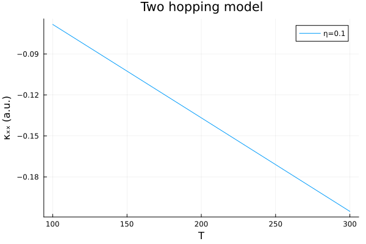

Optical conductivity
The optical conductivity is a response function that describes the electrical current response of a material to an incident electromagnetic field. AutoBZ.jl currently implements the longitudinal conductivity, which is the symmetric part of the conductivity tensor.
Model conductivity
For this tutorial and the electron density tutorial we define a simple tight-binding model based on $t_{2g}$ orbitals with a nearest neighbor intraband hopping and a next-nearest neighbor interband hopping.
using StaticArrays
using OffsetArrays
using AutoBZ
using LinearAlgebra
bz = load_bz(CubicSymIBZ(), Diagonal(ones(3)))
H = OffsetArray(zeros(SMatrix{3,3,Float64,9}, 3,3,3), -1:1, -1:1, -1:1)
# intraband hoppings
t = -0.25 # nearest-neighbor hopping
H[ 1, 0, 0] = H[-1, 0, 0] = [ 0; 0; 0;; 0; t; 0;; 0; 0; t]
H[ 0, 1, 0] = H[ 0,-1, 0] = [ t; 0; 0;; 0; 0; 0;; 0; 0; t]
H[ 0, 0, 1] = H[ 0, 0,-1] = [ t; 0; 0;; 0; t; 0;; 0; 0; 0]
# interband hoppings
t′ = 0.05 # next-nearest neighbor hopping
H[ 0, 1, 1] = H[ 0,-1,-1] = [ 0; 0; 0;; 0; 0;t′;; 0;t′; 0]
H[ 0, 1,-1] = H[ 0,-1, 1] = -[ 0; 0; 0;; 0; 0;t′;; 0;t′; 0]
H[ 1, 0, 1] = H[-1, 0,-1] = [ 0; 0;t′;; 0; 0; 0;;t′; 0; 0]
H[ 1, 0,-1] = H[-1, 0, 1] = -[ 0; 0;t′;; 0; 0; 0;;t′; 0; 0]
H[ 1, 1, 0] = H[-1,-1, 0] = [ 0;t′; 0;;t′; 0; 0;; 0; 0; 0]
H[ 1,-1, 0] = H[-1, 1, 0] = -[ 0;t′; 0;;t′; 0; 0;; 0; 0; 0]
hv = GradientVelocityInterp(HamiltonianInterp(AutoBZ.Freq2RadSeries(FourierSeries(H, period=2pi))), bz.A)3-dimensional and (1.0, 1.0, 1.0)-periodic GradientVelocityInterp in Wannier() gauge and Lattice() coordinates with Whole() velocitiesThe optical conductivity requires the velocity operators in addition to the Hamiltonian in order to compute the current-current correlations. To load a Hamiltonian and velocities from Wannier90 data, see AutoBZ.load_wannier90_data. For integrating the optical conductivity, we construct an AutoBZ.OpticalConductivitySolver and a solver for the BZ integral
η = 0.1 # eV
μ = -0.669607319787773 # eV
β = 10.0 # 1/eV
Σ = EtaSelfEnergy(η)
atol=1e-3
rtol=0.0
solver = OpticalConductivitySolver(hv, bz, PTR(npt=50), Σ, QuadGKJL(); β, Ω=0.0, μ, abstol=atol/nsyms(bz), reltol=rtol)AutoBZCore.AutoBZCache{AutoBZ.LatticeRep, CommonSolveFourierIntegralFunction{IntegralProblem{CommonSolveIntegralFunction{AutoBZ.TwoGreensFunctionProblem{StaticArraysCore.SMatrix{3, 3, ComplexF64, 9}, LinearAlgebra.UniformScaling{ComplexF64}, Base.Pairs{Symbol, Union{}, Tuple{}, NamedTuple{(), Tuple{}}}}, AutoBZ.TwoGreensFunctionLinearSystem{JLInv}, NamedTuple{(), Tuple{}}, AutoBZ.var"#132#136"{Wannier}, AutoBZ.var"#133#137"{AutoBZ.var"#147#148"}, StaticArraysCore.SMatrix{3, 3, ComplexF64, 9}, AutoBZCore.FullSpecialize}, Tuple{Float64, Float64}, Tuple{Tuple{Float64, Float64}, ConstScalarSelfEnergy{ComplexF64, Float64}, Tuple{StaticArraysCore.SMatrix{3, 3, ComplexF64, 9}, StaticArraysCore.SVector{3, StaticArraysCore.SMatrix{3, 3, ComplexF64, 9}}}, NamedTuple{(:β, :μ, :Ω, :n), Tuple{Float64, Float64, Float64, Int64}}}, NamedTuple{(:abstol, :reltol), Tuple{Float64, Float64}}}, QuadGKJL{typeof(LinearAlgebra.norm)}, GradientVelocityInterp{Whole(), Lattice(), Wannier(), 3, Float64, false, HamiltonianInterp{Wannier(), 3, Float64, false, Nothing, Nothing, AutoBZ.Freq2RadSeries{3, Float64, false, FourierSeries{nothing, 3, false, OffsetArrays.OffsetArray{StaticArraysCore.SMatrix{3, 3, Float64, 9}, 3, Array{StaticArraysCore.SMatrix{3, 3, Float64, 9}, 3}}, Tuple{Int64, Int64, Int64}, Float64, Float64}, Tuple{Float64, Float64, Float64}, Tuple{Float64, Float64, Float64}}}, Tuple{}, StaticArraysCore.SMatrix{3, 3, Float64, 9}, Nothing, Nothing}, NamedTuple{(), Tuple{}}, AutoBZ.var"#134#138", AutoBZ.var"#135#139", StaticArraysCore.SMatrix{3, 3, ComplexF64, 9}, AutoBZCore.FullSpecialize}, SymmetricBZ{Vector{StaticArraysCore.SMatrix{3, 3, Float64, 9}}, IteratedIntegration.TetrahedralLimits{3, Float64, Tuple{Float64, Float64, Float64}}, 3, Float64, Float64, 9}, NamedTuple{(:β, :μ, :Ω, :n), Tuple{Float64, Float64, Float64, Int64}}, PTR, AutoBZCore.IntegralSolver{CommonSolveFourierIntegralFunction{IntegralProblem{CommonSolveIntegralFunction{AutoBZ.TwoGreensFunctionProblem{StaticArraysCore.SMatrix{3, 3, ComplexF64, 9}, LinearAlgebra.UniformScaling{ComplexF64}, Base.Pairs{Symbol, Union{}, Tuple{}, NamedTuple{(), Tuple{}}}}, AutoBZ.TwoGreensFunctionLinearSystem{JLInv}, NamedTuple{(), Tuple{}}, AutoBZ.var"#132#136"{Wannier}, AutoBZ.var"#133#137"{AutoBZ.var"#147#148"}, StaticArraysCore.SMatrix{3, 3, ComplexF64, 9}, AutoBZCore.FullSpecialize}, Tuple{Float64, Float64}, Tuple{Tuple{Float64, Float64}, ConstScalarSelfEnergy{ComplexF64, Float64}, Tuple{StaticArraysCore.SMatrix{3, 3, ComplexF64, 9}, StaticArraysCore.SVector{3, StaticArraysCore.SMatrix{3, 3, ComplexF64, 9}}}, NamedTuple{(:β, :μ, :Ω, :n), Tuple{Float64, Float64, Float64, Int64}}}, NamedTuple{(:abstol, :reltol), Tuple{Float64, Float64}}}, QuadGKJL{typeof(LinearAlgebra.norm)}, GradientVelocityInterp{Whole(), Lattice(), Wannier(), 3, Float64, false, HamiltonianInterp{Wannier(), 3, Float64, false, Nothing, Nothing, AutoBZ.Freq2RadSeries{3, Float64, false, FourierSeries{nothing, 3, false, OffsetArrays.OffsetArray{StaticArraysCore.SMatrix{3, 3, Float64, 9}, 3, Array{StaticArraysCore.SMatrix{3, 3, Float64, 9}, 3}}, Tuple{Int64, Int64, Int64}, Float64, Float64}, Tuple{Float64, Float64, Float64}, Tuple{Float64, Float64, Float64}}}, Tuple{}, StaticArraysCore.SMatrix{3, 3, Float64, 9}, Nothing, Nothing}, NamedTuple{(), Tuple{}}, AutoBZ.var"#134#138", AutoBZ.var"#135#139", StaticArraysCore.SMatrix{3, 3, ComplexF64, 9}, AutoBZCore.FullSpecialize}, AutoSymPTR.Basis{3, Float64, StaticArraysCore.SMatrix{3, 3, Float64, 9}}, NamedTuple{(:β, :μ, :Ω, :n), Tuple{Float64, Float64, Float64, Int64}}, MonkhorstPack{Vector{StaticArraysCore.SMatrix{3, 3, Float64, 9}}}, NamedTuple{(:rule, :buffer, :ws, :cache, :integrand), Tuple{AutoBZCore.FourierMonkhorstPack{3, UInt8, Float64, Tuple{StaticArraysCore.SMatrix{3, 3, ComplexF64, 9}, StaticArraysCore.SVector{3, StaticArraysCore.SMatrix{3, 3, ComplexF64, 9}}}}, Nothing, FourierWorkspace{GradientVelocityInterp{Whole(), Lattice(), Wannier(), 3, Float64, false, HamiltonianInterp{Wannier(), 3, Float64, false, Nothing, Nothing, AutoBZ.Freq2RadSeries{3, Float64, false, FourierSeries{nothing, 3, false, OffsetArrays.OffsetArray{StaticArraysCore.SMatrix{3, 3, Float64, 9}, 3, Array{StaticArraysCore.SMatrix{3, 3, Float64, 9}, 3}}, Tuple{Int64, Int64, Int64}, Float64, Float64}, Tuple{Float64, Float64, Float64}, Tuple{Float64, Float64, Float64}}}, Tuple{}, StaticArraysCore.SMatrix{3, 3, Float64, 9}, Nothing, Nothing}, Tuple{FourierWorkspace{Tuple{OffsetArrays.OffsetMatrix{StaticArraysCore.SMatrix{3, 3, ComplexF64, 9}, Matrix{StaticArraysCore.SMatrix{3, 3, ComplexF64, 9}}}, Tuple{OffsetArrays.OffsetMatrix{StaticArraysCore.SMatrix{3, 3, ComplexF64, 9}, Matrix{StaticArraysCore.SMatrix{3, 3, ComplexF64, 9}}}}}, Tuple{FourierWorkspace{Tuple{OffsetArrays.OffsetVector{StaticArraysCore.SMatrix{3, 3, ComplexF64, 9}, Vector{StaticArraysCore.SMatrix{3, 3, ComplexF64, 9}}}, Tuple{OffsetArrays.OffsetVector{StaticArraysCore.SMatrix{3, 3, ComplexF64, 9}, Vector{StaticArraysCore.SMatrix{3, 3, ComplexF64, 9}}}, OffsetArrays.OffsetVector{StaticArraysCore.SMatrix{3, 3, ComplexF64, 9}, Vector{StaticArraysCore.SMatrix{3, 3, ComplexF64, 9}}}}}, Tuple{Tuple{Tuple{Tuple{Nothing, Nothing}, Tuple{Nothing, Nothing, Nothing}}, Nothing}}}}}}}, AutoBZCore.IntegralSolver{CommonSolveIntegralFunction{AutoBZ.TwoGreensFunctionProblem{StaticArraysCore.SMatrix{3, 3, ComplexF64, 9}, LinearAlgebra.UniformScaling{ComplexF64}, Base.Pairs{Symbol, Union{}, Tuple{}, NamedTuple{(), Tuple{}}}}, AutoBZ.TwoGreensFunctionLinearSystem{JLInv}, NamedTuple{(), Tuple{}}, AutoBZ.var"#132#136"{Wannier}, AutoBZ.var"#133#137"{AutoBZ.var"#147#148"}, StaticArraysCore.SMatrix{3, 3, ComplexF64, 9}, AutoBZCore.FullSpecialize}, Tuple{Float64, Float64}, Tuple{Tuple{Float64, Float64}, ConstScalarSelfEnergy{ComplexF64, Float64}, Tuple{StaticArraysCore.SMatrix{3, 3, ComplexF64, 9}, StaticArraysCore.SVector{3, StaticArraysCore.SMatrix{3, 3, ComplexF64, 9}}}, NamedTuple{(:β, :μ, :Ω, :n), Tuple{Float64, Float64, Float64, Int64}}}, QuadGKJL{typeof(LinearAlgebra.norm)}, Tuple{Vector{QuadGK.Segment{Float64, StaticArraysCore.SMatrix{3, 3, ComplexF64, 9}, Float64}}, AutoBZ.TwoGreensFunctionSolver{StaticArraysCore.SMatrix{3, 3, ComplexF64, 9}, LinearAlgebra.UniformScaling{ComplexF64}, NamedTuple{(), Tuple{}}, AutoBZ.TwoGreensFunctionLinearSystem{JLInv}, AutoBZ.LinearSystemSolver{StaticArraysCore.SMatrix{3, 3, ComplexF64, 9}, typeof(identity), typeof(identity), JLInv, Nothing, NamedTuple{(), Tuple{}}}}, AutoBZCore.var"#4#5"{AutoBZ.TwoGreensFunctionSolver{StaticArraysCore.SMatrix{3, 3, ComplexF64, 9}, LinearAlgebra.UniformScaling{ComplexF64}, NamedTuple{(), Tuple{}}, AutoBZ.TwoGreensFunctionLinearSystem{JLInv}, AutoBZ.LinearSystemSolver{StaticArraysCore.SMatrix{3, 3, ComplexF64, 9}, typeof(identity), typeof(identity), JLInv, Nothing, NamedTuple{(), Tuple{}}}}, CommonSolveIntegralFunction{AutoBZ.TwoGreensFunctionProblem{StaticArraysCore.SMatrix{3, 3, ComplexF64, 9}, LinearAlgebra.UniformScaling{ComplexF64}, Base.Pairs{Symbol, Union{}, Tuple{}, NamedTuple{(), Tuple{}}}}, AutoBZ.TwoGreensFunctionLinearSystem{JLInv}, NamedTuple{(), Tuple{}}, AutoBZ.var"#132#136"{Wannier}, AutoBZ.var"#133#137"{AutoBZ.var"#147#148"}, StaticArraysCore.SMatrix{3, 3, ComplexF64, 9}, AutoBZCore.FullSpecialize}}}, NamedTuple{(:abstol, :reltol), Tuple{Float64, Float64}}}, AutoBZCore.var"#157#158"{AutoBZCore.IntegralSolver{CommonSolveIntegralFunction{AutoBZ.TwoGreensFunctionProblem{StaticArraysCore.SMatrix{3, 3, ComplexF64, 9}, LinearAlgebra.UniformScaling{ComplexF64}, Base.Pairs{Symbol, Union{}, Tuple{}, NamedTuple{(), Tuple{}}}}, AutoBZ.TwoGreensFunctionLinearSystem{JLInv}, NamedTuple{(), Tuple{}}, AutoBZ.var"#132#136"{Wannier}, AutoBZ.var"#133#137"{AutoBZ.var"#147#148"}, StaticArraysCore.SMatrix{3, 3, ComplexF64, 9}, AutoBZCore.FullSpecialize}, Tuple{Float64, Float64}, Tuple{Tuple{Float64, Float64}, ConstScalarSelfEnergy{ComplexF64, Float64}, Tuple{StaticArraysCore.SMatrix{3, 3, ComplexF64, 9}, StaticArraysCore.SVector{3, StaticArraysCore.SMatrix{3, 3, ComplexF64, 9}}}, NamedTuple{(:β, :μ, :Ω, :n), Tuple{Float64, Float64, Float64, Int64}}}, QuadGKJL{typeof(LinearAlgebra.norm)}, Tuple{Vector{QuadGK.Segment{Float64, StaticArraysCore.SMatrix{3, 3, ComplexF64, 9}, Float64}}, AutoBZ.TwoGreensFunctionSolver{StaticArraysCore.SMatrix{3, 3, ComplexF64, 9}, LinearAlgebra.UniformScaling{ComplexF64}, NamedTuple{(), Tuple{}}, AutoBZ.TwoGreensFunctionLinearSystem{JLInv}, AutoBZ.LinearSystemSolver{StaticArraysCore.SMatrix{3, 3, ComplexF64, 9}, typeof(identity), typeof(identity), JLInv, Nothing, NamedTuple{(), Tuple{}}}}, AutoBZCore.var"#4#5"{AutoBZ.TwoGreensFunctionSolver{StaticArraysCore.SMatrix{3, 3, ComplexF64, 9}, LinearAlgebra.UniformScaling{ComplexF64}, NamedTuple{(), Tuple{}}, AutoBZ.TwoGreensFunctionLinearSystem{JLInv}, AutoBZ.LinearSystemSolver{StaticArraysCore.SMatrix{3, 3, ComplexF64, 9}, typeof(identity), typeof(identity), JLInv, Nothing, NamedTuple{(), Tuple{}}}}, CommonSolveIntegralFunction{AutoBZ.TwoGreensFunctionProblem{StaticArraysCore.SMatrix{3, 3, ComplexF64, 9}, LinearAlgebra.UniformScaling{ComplexF64}, Base.Pairs{Symbol, Union{}, Tuple{}, NamedTuple{(), Tuple{}}}}, AutoBZ.TwoGreensFunctionLinearSystem{JLInv}, NamedTuple{(), Tuple{}}, AutoBZ.var"#132#136"{Wannier}, AutoBZ.var"#133#137"{AutoBZ.var"#147#148"}, StaticArraysCore.SMatrix{3, 3, ComplexF64, 9}, AutoBZCore.FullSpecialize}}}, NamedTuple{(:abstol, :reltol), Tuple{Float64, Float64}}}, CommonSolveFourierIntegralFunction{IntegralProblem{CommonSolveIntegralFunction{AutoBZ.TwoGreensFunctionProblem{StaticArraysCore.SMatrix{3, 3, ComplexF64, 9}, LinearAlgebra.UniformScaling{ComplexF64}, Base.Pairs{Symbol, Union{}, Tuple{}, NamedTuple{(), Tuple{}}}}, AutoBZ.TwoGreensFunctionLinearSystem{JLInv}, NamedTuple{(), Tuple{}}, AutoBZ.var"#132#136"{Wannier}, AutoBZ.var"#133#137"{AutoBZ.var"#147#148"}, StaticArraysCore.SMatrix{3, 3, ComplexF64, 9}, AutoBZCore.FullSpecialize}, Tuple{Float64, Float64}, Tuple{Tuple{Float64, Float64}, ConstScalarSelfEnergy{ComplexF64, Float64}, Tuple{StaticArraysCore.SMatrix{3, 3, ComplexF64, 9}, StaticArraysCore.SVector{3, StaticArraysCore.SMatrix{3, 3, ComplexF64, 9}}}, NamedTuple{(:β, :μ, :Ω, :n), Tuple{Float64, Float64, Float64, Int64}}}, NamedTuple{(:abstol, :reltol), Tuple{Float64, Float64}}}, QuadGKJL{typeof(LinearAlgebra.norm)}, GradientVelocityInterp{Whole(), Lattice(), Wannier(), 3, Float64, false, HamiltonianInterp{Wannier(), 3, Float64, false, Nothing, Nothing, AutoBZ.Freq2RadSeries{3, Float64, false, FourierSeries{nothing, 3, false, OffsetArrays.OffsetArray{StaticArraysCore.SMatrix{3, 3, Float64, 9}, 3, Array{StaticArraysCore.SMatrix{3, 3, Float64, 9}, 3}}, Tuple{Int64, Int64, Int64}, Float64, Float64}, Tuple{Float64, Float64, Float64}, Tuple{Float64, Float64, Float64}}}, Tuple{}, StaticArraysCore.SMatrix{3, 3, Float64, 9}, Nothing, Nothing}, NamedTuple{(), Tuple{}}, AutoBZ.var"#134#138", AutoBZ.var"#135#139", StaticArraysCore.SMatrix{3, 3, ComplexF64, 9}, AutoBZCore.FullSpecialize}}}}, NamedTuple{(:abstol, :reltol), Tuple{Float64, Float64}}}, NamedTuple{(:abstol, :reltol), Tuple{Float64, Float64}}}(AutoBZ.LatticeRep(), CommonSolveFourierIntegralFunction{IntegralProblem{CommonSolveIntegralFunction{AutoBZ.TwoGreensFunctionProblem{StaticArraysCore.SMatrix{3, 3, ComplexF64, 9}, LinearAlgebra.UniformScaling{ComplexF64}, Base.Pairs{Symbol, Union{}, Tuple{}, NamedTuple{(), Tuple{}}}}, AutoBZ.TwoGreensFunctionLinearSystem{JLInv}, NamedTuple{(), Tuple{}}, AutoBZ.var"#132#136"{Wannier}, AutoBZ.var"#133#137"{AutoBZ.var"#147#148"}, StaticArraysCore.SMatrix{3, 3, ComplexF64, 9}, AutoBZCore.FullSpecialize}, Tuple{Float64, Float64}, Tuple{Tuple{Float64, Float64}, ConstScalarSelfEnergy{ComplexF64, Float64}, Tuple{StaticArraysCore.SMatrix{3, 3, ComplexF64, 9}, StaticArraysCore.SVector{3, StaticArraysCore.SMatrix{3, 3, ComplexF64, 9}}}, NamedTuple{(:β, :μ, :Ω, :n), Tuple{Float64, Float64, Float64, Int64}}}, NamedTuple{(:abstol, :reltol), Tuple{Float64, Float64}}}, QuadGKJL{typeof(LinearAlgebra.norm)}, GradientVelocityInterp{Whole(), Lattice(), Wannier(), 3, Float64, false, HamiltonianInterp{Wannier(), 3, Float64, false, Nothing, Nothing, AutoBZ.Freq2RadSeries{3, Float64, false, FourierSeries{nothing, 3, false, OffsetArrays.OffsetArray{StaticArraysCore.SMatrix{3, 3, Float64, 9}, 3, Array{StaticArraysCore.SMatrix{3, 3, Float64, 9}, 3}}, Tuple{Int64, Int64, Int64}, Float64, Float64}, Tuple{Float64, Float64, Float64}, Tuple{Float64, Float64, Float64}}}, Tuple{}, StaticArraysCore.SMatrix{3, 3, Float64, 9}, Nothing, Nothing}, NamedTuple{(), Tuple{}}, AutoBZ.var"#134#138", AutoBZ.var"#135#139", StaticArraysCore.SMatrix{3, 3, ComplexF64, 9}, AutoBZCore.FullSpecialize}(IntegralProblem{CommonSolveIntegralFunction{AutoBZ.TwoGreensFunctionProblem{StaticArraysCore.SMatrix{3, 3, ComplexF64, 9}, LinearAlgebra.UniformScaling{ComplexF64}, Base.Pairs{Symbol, Union{}, Tuple{}, NamedTuple{(), Tuple{}}}}, AutoBZ.TwoGreensFunctionLinearSystem{JLInv}, NamedTuple{(), Tuple{}}, AutoBZ.var"#132#136"{Wannier}, AutoBZ.var"#133#137"{AutoBZ.var"#147#148"}, StaticArraysCore.SMatrix{3, 3, ComplexF64, 9}, AutoBZCore.FullSpecialize}, Tuple{Float64, Float64}, Tuple{Tuple{Float64, Float64}, ConstScalarSelfEnergy{ComplexF64, Float64}, Tuple{StaticArraysCore.SMatrix{3, 3, ComplexF64, 9}, StaticArraysCore.SVector{3, StaticArraysCore.SMatrix{3, 3, ComplexF64, 9}}}, NamedTuple{(:β, :μ, :Ω, :n), Tuple{Float64, Float64, Float64, Int64}}}, NamedTuple{(:abstol, :reltol), Tuple{Float64, Float64}}}(CommonSolveIntegralFunction{AutoBZ.TwoGreensFunctionProblem{StaticArraysCore.SMatrix{3, 3, ComplexF64, 9}, LinearAlgebra.UniformScaling{ComplexF64}, Base.Pairs{Symbol, Union{}, Tuple{}, NamedTuple{(), Tuple{}}}}, AutoBZ.TwoGreensFunctionLinearSystem{JLInv}, NamedTuple{(), Tuple{}}, AutoBZ.var"#132#136"{Wannier}, AutoBZ.var"#133#137"{AutoBZ.var"#147#148"}, StaticArraysCore.SMatrix{3, 3, ComplexF64, 9}, AutoBZCore.FullSpecialize}(AutoBZ.TwoGreensFunctionProblem{StaticArraysCore.SMatrix{3, 3, ComplexF64, 9}, LinearAlgebra.UniformScaling{ComplexF64}, Base.Pairs{Symbol, Union{}, Tuple{}, NamedTuple{(), Tuple{}}}}(ComplexF64[-1.0 + 0.0im -1.1998078261294862e-32 + 0.0im -1.1998078261294862e-32 + 0.0im; -1.1998078261294862e-32 + 0.0im -1.0 + 0.0im -1.1998078261294862e-32 + 0.0im; -1.1998078261294862e-32 + 0.0im -1.1998078261294862e-32 + 0.0im -1.0 + 0.0im], LinearAlgebra.UniformScaling{ComplexF64}(-0.669607319787773 + 0.1im), LinearAlgebra.UniformScaling{ComplexF64}(-0.669607319787773 + 0.1im), false, Base.Pairs{Symbol, Union{}, Tuple{}, NamedTuple{(), Tuple{}}}()), AutoBZ.TwoGreensFunctionLinearSystem{JLInv}(JLInv()), NamedTuple(), AutoBZ.var"#132#136"{Wannier}(Wannier()), AutoBZ.var"#133#137"{AutoBZ.var"#147#148"}(AutoBZ.var"#147#148"()), ComplexF64[NaN + NaN*im NaN + NaN*im NaN + NaN*im; NaN + NaN*im NaN + NaN*im NaN + NaN*im; NaN + NaN*im NaN + NaN*im NaN + NaN*im], AutoBZCore.FullSpecialize()), (-3.742994775023705, 3.742994775023705), ((-Inf, Inf), ConstScalarSelfEnergy{ComplexF64, Float64}(0.0 - 0.1im, -Inf, Inf), (ComplexF64[-1.0 + 0.0im -1.1998078261294862e-32 + 0.0im -1.1998078261294862e-32 + 0.0im; -1.1998078261294862e-32 + 0.0im -1.0 + 0.0im -1.1998078261294862e-32 + 0.0im; -1.1998078261294862e-32 + 0.0im -1.1998078261294862e-32 + 0.0im -1.0 + 0.0im], StaticArraysCore.SMatrix{3, 3, ComplexF64, 9}[[0.0 + 0.0im 4.898587196589413e-17 - 1.4168279012814617e-49im 4.898587196589413e-17 - 1.4168279012814617e-49im; 4.898587196589413e-17 - 1.4168279012814617e-49im -1.2246467991473532e-16 + 0.0im 0.0 + 0.0im; 4.898587196589413e-17 - 1.4168279012814617e-49im 0.0 + 0.0im -1.2246467991473532e-16 + 0.0im], [-1.2246467991473532e-16 + 0.0im 4.898587196589413e-17 + 0.0im 0.0 + 0.0im; 4.898587196589413e-17 + 0.0im 0.0 + 0.0im 4.898587196589413e-17 - 1.4168279012814617e-49im; 0.0 + 0.0im 4.898587196589413e-17 - 1.4168279012814617e-49im -1.2246467991473532e-16 + 0.0im], [-1.2246467991473532e-16 + 0.0im 0.0 + 0.0im 4.898587196589413e-17 + 0.0im; 0.0 + 0.0im -1.2246467991473532e-16 + 0.0im 4.898587196589413e-17 + 0.0im; 4.898587196589413e-17 + 0.0im 4.898587196589413e-17 + 0.0im 0.0 + 0.0im]]), (β = 10.0, μ = -0.669607319787773, Ω = 0.0, n = 0)), (abstol = 1.749757727495632e-9, reltol = 0.0)), QuadGKJL{typeof(LinearAlgebra.norm)}(7, LinearAlgebra.norm), 3-dimensional and (1.0, 1.0, 1.0)-periodic GradientVelocityInterp in Wannier() gauge and Lattice() coordinates with Whole() velocities, NamedTuple(), AutoBZ.var"#134#138"(Core.Box(ConstScalarSelfEnergy{ComplexF64, Float64}(0.0 - 0.1im, -Inf, Inf)), Core.Box((-Inf, Inf))), AutoBZ.var"#135#139"(), ComplexF64[NaN + NaN*im NaN + NaN*im NaN + NaN*im; NaN + NaN*im NaN + NaN*im NaN + NaN*im; NaN + NaN*im NaN + NaN*im NaN + NaN*im], AutoBZCore.FullSpecialize(), false), 3-dimensional Brillouin zone with 48 symmetries, (β = 10.0, μ = -0.669607319787773, Ω = 0.0, n = 0), PTR(50, 1), AutoBZCore.IntegralSolver{CommonSolveFourierIntegralFunction{IntegralProblem{CommonSolveIntegralFunction{AutoBZ.TwoGreensFunctionProblem{StaticArraysCore.SMatrix{3, 3, ComplexF64, 9}, LinearAlgebra.UniformScaling{ComplexF64}, Base.Pairs{Symbol, Union{}, Tuple{}, NamedTuple{(), Tuple{}}}}, AutoBZ.TwoGreensFunctionLinearSystem{JLInv}, NamedTuple{(), Tuple{}}, AutoBZ.var"#132#136"{Wannier}, AutoBZ.var"#133#137"{AutoBZ.var"#147#148"}, StaticArraysCore.SMatrix{3, 3, ComplexF64, 9}, AutoBZCore.FullSpecialize}, Tuple{Float64, Float64}, Tuple{Tuple{Float64, Float64}, ConstScalarSelfEnergy{ComplexF64, Float64}, Tuple{StaticArraysCore.SMatrix{3, 3, ComplexF64, 9}, StaticArraysCore.SVector{3, StaticArraysCore.SMatrix{3, 3, ComplexF64, 9}}}, NamedTuple{(:β, :μ, :Ω, :n), Tuple{Float64, Float64, Float64, Int64}}}, NamedTuple{(:abstol, :reltol), Tuple{Float64, Float64}}}, QuadGKJL{typeof(LinearAlgebra.norm)}, GradientVelocityInterp{Whole(), Lattice(), Wannier(), 3, Float64, false, HamiltonianInterp{Wannier(), 3, Float64, false, Nothing, Nothing, AutoBZ.Freq2RadSeries{3, Float64, false, FourierSeries{nothing, 3, false, OffsetArrays.OffsetArray{StaticArraysCore.SMatrix{3, 3, Float64, 9}, 3, Array{StaticArraysCore.SMatrix{3, 3, Float64, 9}, 3}}, Tuple{Int64, Int64, Int64}, Float64, Float64}, Tuple{Float64, Float64, Float64}, Tuple{Float64, Float64, Float64}}}, Tuple{}, StaticArraysCore.SMatrix{3, 3, Float64, 9}, Nothing, Nothing}, NamedTuple{(), Tuple{}}, AutoBZ.var"#134#138", AutoBZ.var"#135#139", StaticArraysCore.SMatrix{3, 3, ComplexF64, 9}, AutoBZCore.FullSpecialize}, AutoSymPTR.Basis{3, Float64, StaticArraysCore.SMatrix{3, 3, Float64, 9}}, NamedTuple{(:β, :μ, :Ω, :n), Tuple{Float64, Float64, Float64, Int64}}, MonkhorstPack{Vector{StaticArraysCore.SMatrix{3, 3, Float64, 9}}}, NamedTuple{(:rule, :buffer, :ws, :cache, :integrand), Tuple{AutoBZCore.FourierMonkhorstPack{3, UInt8, Float64, Tuple{StaticArraysCore.SMatrix{3, 3, ComplexF64, 9}, StaticArraysCore.SVector{3, StaticArraysCore.SMatrix{3, 3, ComplexF64, 9}}}}, Nothing, FourierWorkspace{GradientVelocityInterp{Whole(), Lattice(), Wannier(), 3, Float64, false, HamiltonianInterp{Wannier(), 3, Float64, false, Nothing, Nothing, AutoBZ.Freq2RadSeries{3, Float64, false, FourierSeries{nothing, 3, false, OffsetArrays.OffsetArray{StaticArraysCore.SMatrix{3, 3, Float64, 9}, 3, Array{StaticArraysCore.SMatrix{3, 3, Float64, 9}, 3}}, Tuple{Int64, Int64, Int64}, Float64, Float64}, Tuple{Float64, Float64, Float64}, Tuple{Float64, Float64, Float64}}}, Tuple{}, StaticArraysCore.SMatrix{3, 3, Float64, 9}, Nothing, Nothing}, Tuple{FourierWorkspace{Tuple{OffsetArrays.OffsetMatrix{StaticArraysCore.SMatrix{3, 3, ComplexF64, 9}, Matrix{StaticArraysCore.SMatrix{3, 3, ComplexF64, 9}}}, Tuple{OffsetArrays.OffsetMatrix{StaticArraysCore.SMatrix{3, 3, ComplexF64, 9}, Matrix{StaticArraysCore.SMatrix{3, 3, ComplexF64, 9}}}}}, Tuple{FourierWorkspace{Tuple{OffsetArrays.OffsetVector{StaticArraysCore.SMatrix{3, 3, ComplexF64, 9}, Vector{StaticArraysCore.SMatrix{3, 3, ComplexF64, 9}}}, Tuple{OffsetArrays.OffsetVector{StaticArraysCore.SMatrix{3, 3, ComplexF64, 9}, Vector{StaticArraysCore.SMatrix{3, 3, ComplexF64, 9}}}, OffsetArrays.OffsetVector{StaticArraysCore.SMatrix{3, 3, ComplexF64, 9}, Vector{StaticArraysCore.SMatrix{3, 3, ComplexF64, 9}}}}}, Tuple{Tuple{Tuple{Tuple{Nothing, Nothing}, Tuple{Nothing, Nothing, Nothing}}, Nothing}}}}}}}, AutoBZCore.IntegralSolver{CommonSolveIntegralFunction{AutoBZ.TwoGreensFunctionProblem{StaticArraysCore.SMatrix{3, 3, ComplexF64, 9}, LinearAlgebra.UniformScaling{ComplexF64}, Base.Pairs{Symbol, Union{}, Tuple{}, NamedTuple{(), Tuple{}}}}, AutoBZ.TwoGreensFunctionLinearSystem{JLInv}, NamedTuple{(), Tuple{}}, AutoBZ.var"#132#136"{Wannier}, AutoBZ.var"#133#137"{AutoBZ.var"#147#148"}, StaticArraysCore.SMatrix{3, 3, ComplexF64, 9}, AutoBZCore.FullSpecialize}, Tuple{Float64, Float64}, Tuple{Tuple{Float64, Float64}, ConstScalarSelfEnergy{ComplexF64, Float64}, Tuple{StaticArraysCore.SMatrix{3, 3, ComplexF64, 9}, StaticArraysCore.SVector{3, StaticArraysCore.SMatrix{3, 3, ComplexF64, 9}}}, NamedTuple{(:β, :μ, :Ω, :n), Tuple{Float64, Float64, Float64, Int64}}}, QuadGKJL{typeof(LinearAlgebra.norm)}, Tuple{Vector{QuadGK.Segment{Float64, StaticArraysCore.SMatrix{3, 3, ComplexF64, 9}, Float64}}, AutoBZ.TwoGreensFunctionSolver{StaticArraysCore.SMatrix{3, 3, ComplexF64, 9}, LinearAlgebra.UniformScaling{ComplexF64}, NamedTuple{(), Tuple{}}, AutoBZ.TwoGreensFunctionLinearSystem{JLInv}, AutoBZ.LinearSystemSolver{StaticArraysCore.SMatrix{3, 3, ComplexF64, 9}, typeof(identity), typeof(identity), JLInv, Nothing, NamedTuple{(), Tuple{}}}}, AutoBZCore.var"#4#5"{AutoBZ.TwoGreensFunctionSolver{StaticArraysCore.SMatrix{3, 3, ComplexF64, 9}, LinearAlgebra.UniformScaling{ComplexF64}, NamedTuple{(), Tuple{}}, AutoBZ.TwoGreensFunctionLinearSystem{JLInv}, AutoBZ.LinearSystemSolver{StaticArraysCore.SMatrix{3, 3, ComplexF64, 9}, typeof(identity), typeof(identity), JLInv, Nothing, NamedTuple{(), Tuple{}}}}, CommonSolveIntegralFunction{AutoBZ.TwoGreensFunctionProblem{StaticArraysCore.SMatrix{3, 3, ComplexF64, 9}, LinearAlgebra.UniformScaling{ComplexF64}, Base.Pairs{Symbol, Union{}, Tuple{}, NamedTuple{(), Tuple{}}}}, AutoBZ.TwoGreensFunctionLinearSystem{JLInv}, NamedTuple{(), Tuple{}}, AutoBZ.var"#132#136"{Wannier}, AutoBZ.var"#133#137"{AutoBZ.var"#147#148"}, StaticArraysCore.SMatrix{3, 3, ComplexF64, 9}, AutoBZCore.FullSpecialize}}}, NamedTuple{(:abstol, :reltol), Tuple{Float64, Float64}}}, AutoBZCore.var"#157#158"{AutoBZCore.IntegralSolver{CommonSolveIntegralFunction{AutoBZ.TwoGreensFunctionProblem{StaticArraysCore.SMatrix{3, 3, ComplexF64, 9}, LinearAlgebra.UniformScaling{ComplexF64}, Base.Pairs{Symbol, Union{}, Tuple{}, NamedTuple{(), Tuple{}}}}, AutoBZ.TwoGreensFunctionLinearSystem{JLInv}, NamedTuple{(), Tuple{}}, AutoBZ.var"#132#136"{Wannier}, AutoBZ.var"#133#137"{AutoBZ.var"#147#148"}, StaticArraysCore.SMatrix{3, 3, ComplexF64, 9}, AutoBZCore.FullSpecialize}, Tuple{Float64, Float64}, Tuple{Tuple{Float64, Float64}, ConstScalarSelfEnergy{ComplexF64, Float64}, Tuple{StaticArraysCore.SMatrix{3, 3, ComplexF64, 9}, StaticArraysCore.SVector{3, StaticArraysCore.SMatrix{3, 3, ComplexF64, 9}}}, NamedTuple{(:β, :μ, :Ω, :n), Tuple{Float64, Float64, Float64, Int64}}}, QuadGKJL{typeof(LinearAlgebra.norm)}, Tuple{Vector{QuadGK.Segment{Float64, StaticArraysCore.SMatrix{3, 3, ComplexF64, 9}, Float64}}, AutoBZ.TwoGreensFunctionSolver{StaticArraysCore.SMatrix{3, 3, ComplexF64, 9}, LinearAlgebra.UniformScaling{ComplexF64}, NamedTuple{(), Tuple{}}, AutoBZ.TwoGreensFunctionLinearSystem{JLInv}, AutoBZ.LinearSystemSolver{StaticArraysCore.SMatrix{3, 3, ComplexF64, 9}, typeof(identity), typeof(identity), JLInv, Nothing, NamedTuple{(), Tuple{}}}}, AutoBZCore.var"#4#5"{AutoBZ.TwoGreensFunctionSolver{StaticArraysCore.SMatrix{3, 3, ComplexF64, 9}, LinearAlgebra.UniformScaling{ComplexF64}, NamedTuple{(), Tuple{}}, AutoBZ.TwoGreensFunctionLinearSystem{JLInv}, AutoBZ.LinearSystemSolver{StaticArraysCore.SMatrix{3, 3, ComplexF64, 9}, typeof(identity), typeof(identity), JLInv, Nothing, NamedTuple{(), Tuple{}}}}, CommonSolveIntegralFunction{AutoBZ.TwoGreensFunctionProblem{StaticArraysCore.SMatrix{3, 3, ComplexF64, 9}, LinearAlgebra.UniformScaling{ComplexF64}, Base.Pairs{Symbol, Union{}, Tuple{}, NamedTuple{(), Tuple{}}}}, AutoBZ.TwoGreensFunctionLinearSystem{JLInv}, NamedTuple{(), Tuple{}}, AutoBZ.var"#132#136"{Wannier}, AutoBZ.var"#133#137"{AutoBZ.var"#147#148"}, StaticArraysCore.SMatrix{3, 3, ComplexF64, 9}, AutoBZCore.FullSpecialize}}}, NamedTuple{(:abstol, :reltol), Tuple{Float64, Float64}}}, CommonSolveFourierIntegralFunction{IntegralProblem{CommonSolveIntegralFunction{AutoBZ.TwoGreensFunctionProblem{StaticArraysCore.SMatrix{3, 3, ComplexF64, 9}, LinearAlgebra.UniformScaling{ComplexF64}, Base.Pairs{Symbol, Union{}, Tuple{}, NamedTuple{(), Tuple{}}}}, AutoBZ.TwoGreensFunctionLinearSystem{JLInv}, NamedTuple{(), Tuple{}}, AutoBZ.var"#132#136"{Wannier}, AutoBZ.var"#133#137"{AutoBZ.var"#147#148"}, StaticArraysCore.SMatrix{3, 3, ComplexF64, 9}, AutoBZCore.FullSpecialize}, Tuple{Float64, Float64}, Tuple{Tuple{Float64, Float64}, ConstScalarSelfEnergy{ComplexF64, Float64}, Tuple{StaticArraysCore.SMatrix{3, 3, ComplexF64, 9}, StaticArraysCore.SVector{3, StaticArraysCore.SMatrix{3, 3, ComplexF64, 9}}}, NamedTuple{(:β, :μ, :Ω, :n), Tuple{Float64, Float64, Float64, Int64}}}, NamedTuple{(:abstol, :reltol), Tuple{Float64, Float64}}}, QuadGKJL{typeof(LinearAlgebra.norm)}, GradientVelocityInterp{Whole(), Lattice(), Wannier(), 3, Float64, false, HamiltonianInterp{Wannier(), 3, Float64, false, Nothing, Nothing, AutoBZ.Freq2RadSeries{3, Float64, false, FourierSeries{nothing, 3, false, OffsetArrays.OffsetArray{StaticArraysCore.SMatrix{3, 3, Float64, 9}, 3, Array{StaticArraysCore.SMatrix{3, 3, Float64, 9}, 3}}, Tuple{Int64, Int64, Int64}, Float64, Float64}, Tuple{Float64, Float64, Float64}, Tuple{Float64, Float64, Float64}}}, Tuple{}, StaticArraysCore.SMatrix{3, 3, Float64, 9}, Nothing, Nothing}, NamedTuple{(), Tuple{}}, AutoBZ.var"#134#138", AutoBZ.var"#135#139", StaticArraysCore.SMatrix{3, 3, ComplexF64, 9}, AutoBZCore.FullSpecialize}}}}, NamedTuple{(:abstol, :reltol), Tuple{Float64, Float64}}}(CommonSolveFourierIntegralFunction{IntegralProblem{CommonSolveIntegralFunction{AutoBZ.TwoGreensFunctionProblem{StaticArraysCore.SMatrix{3, 3, ComplexF64, 9}, LinearAlgebra.UniformScaling{ComplexF64}, Base.Pairs{Symbol, Union{}, Tuple{}, NamedTuple{(), Tuple{}}}}, AutoBZ.TwoGreensFunctionLinearSystem{JLInv}, NamedTuple{(), Tuple{}}, AutoBZ.var"#132#136"{Wannier}, AutoBZ.var"#133#137"{AutoBZ.var"#147#148"}, StaticArraysCore.SMatrix{3, 3, ComplexF64, 9}, AutoBZCore.FullSpecialize}, Tuple{Float64, Float64}, Tuple{Tuple{Float64, Float64}, ConstScalarSelfEnergy{ComplexF64, Float64}, Tuple{StaticArraysCore.SMatrix{3, 3, ComplexF64, 9}, StaticArraysCore.SVector{3, StaticArraysCore.SMatrix{3, 3, ComplexF64, 9}}}, NamedTuple{(:β, :μ, :Ω, :n), Tuple{Float64, Float64, Float64, Int64}}}, NamedTuple{(:abstol, :reltol), Tuple{Float64, Float64}}}, QuadGKJL{typeof(LinearAlgebra.norm)}, GradientVelocityInterp{Whole(), Lattice(), Wannier(), 3, Float64, false, HamiltonianInterp{Wannier(), 3, Float64, false, Nothing, Nothing, AutoBZ.Freq2RadSeries{3, Float64, false, FourierSeries{nothing, 3, false, OffsetArrays.OffsetArray{StaticArraysCore.SMatrix{3, 3, Float64, 9}, 3, Array{StaticArraysCore.SMatrix{3, 3, Float64, 9}, 3}}, Tuple{Int64, Int64, Int64}, Float64, Float64}, Tuple{Float64, Float64, Float64}, Tuple{Float64, Float64, Float64}}}, Tuple{}, StaticArraysCore.SMatrix{3, 3, Float64, 9}, Nothing, Nothing}, NamedTuple{(), Tuple{}}, AutoBZ.var"#134#138", AutoBZ.var"#135#139", StaticArraysCore.SMatrix{3, 3, ComplexF64, 9}, AutoBZCore.FullSpecialize}(IntegralProblem{CommonSolveIntegralFunction{AutoBZ.TwoGreensFunctionProblem{StaticArraysCore.SMatrix{3, 3, ComplexF64, 9}, LinearAlgebra.UniformScaling{ComplexF64}, Base.Pairs{Symbol, Union{}, Tuple{}, NamedTuple{(), Tuple{}}}}, AutoBZ.TwoGreensFunctionLinearSystem{JLInv}, NamedTuple{(), Tuple{}}, AutoBZ.var"#132#136"{Wannier}, AutoBZ.var"#133#137"{AutoBZ.var"#147#148"}, StaticArraysCore.SMatrix{3, 3, ComplexF64, 9}, AutoBZCore.FullSpecialize}, Tuple{Float64, Float64}, Tuple{Tuple{Float64, Float64}, ConstScalarSelfEnergy{ComplexF64, Float64}, Tuple{StaticArraysCore.SMatrix{3, 3, ComplexF64, 9}, StaticArraysCore.SVector{3, StaticArraysCore.SMatrix{3, 3, ComplexF64, 9}}}, NamedTuple{(:β, :μ, :Ω, :n), Tuple{Float64, Float64, Float64, Int64}}}, NamedTuple{(:abstol, :reltol), Tuple{Float64, Float64}}}(CommonSolveIntegralFunction{AutoBZ.TwoGreensFunctionProblem{StaticArraysCore.SMatrix{3, 3, ComplexF64, 9}, LinearAlgebra.UniformScaling{ComplexF64}, Base.Pairs{Symbol, Union{}, Tuple{}, NamedTuple{(), Tuple{}}}}, AutoBZ.TwoGreensFunctionLinearSystem{JLInv}, NamedTuple{(), Tuple{}}, AutoBZ.var"#132#136"{Wannier}, AutoBZ.var"#133#137"{AutoBZ.var"#147#148"}, StaticArraysCore.SMatrix{3, 3, ComplexF64, 9}, AutoBZCore.FullSpecialize}(AutoBZ.TwoGreensFunctionProblem{StaticArraysCore.SMatrix{3, 3, ComplexF64, 9}, LinearAlgebra.UniformScaling{ComplexF64}, Base.Pairs{Symbol, Union{}, Tuple{}, NamedTuple{(), Tuple{}}}}(ComplexF64[-1.0 + 0.0im -1.1998078261294862e-32 + 0.0im -1.1998078261294862e-32 + 0.0im; -1.1998078261294862e-32 + 0.0im -1.0 + 0.0im -1.1998078261294862e-32 + 0.0im; -1.1998078261294862e-32 + 0.0im -1.1998078261294862e-32 + 0.0im -1.0 + 0.0im], LinearAlgebra.UniformScaling{ComplexF64}(-0.669607319787773 + 0.1im), LinearAlgebra.UniformScaling{ComplexF64}(-0.669607319787773 + 0.1im), false, Base.Pairs{Symbol, Union{}, Tuple{}, NamedTuple{(), Tuple{}}}()), AutoBZ.TwoGreensFunctionLinearSystem{JLInv}(JLInv()), NamedTuple(), AutoBZ.var"#132#136"{Wannier}(Wannier()), AutoBZ.var"#133#137"{AutoBZ.var"#147#148"}(AutoBZ.var"#147#148"()), ComplexF64[NaN + NaN*im NaN + NaN*im NaN + NaN*im; NaN + NaN*im NaN + NaN*im NaN + NaN*im; NaN + NaN*im NaN + NaN*im NaN + NaN*im], AutoBZCore.FullSpecialize()), (-3.742994775023705, 3.742994775023705), ((-Inf, Inf), ConstScalarSelfEnergy{ComplexF64, Float64}(0.0 - 0.1im, -Inf, Inf), (ComplexF64[-1.0 + 0.0im -1.1998078261294862e-32 + 0.0im -1.1998078261294862e-32 + 0.0im; -1.1998078261294862e-32 + 0.0im -1.0 + 0.0im -1.1998078261294862e-32 + 0.0im; -1.1998078261294862e-32 + 0.0im -1.1998078261294862e-32 + 0.0im -1.0 + 0.0im], StaticArraysCore.SMatrix{3, 3, ComplexF64, 9}[[0.0 + 0.0im 4.898587196589413e-17 - 1.4168279012814617e-49im 4.898587196589413e-17 - 1.4168279012814617e-49im; 4.898587196589413e-17 - 1.4168279012814617e-49im -1.2246467991473532e-16 + 0.0im 0.0 + 0.0im; 4.898587196589413e-17 - 1.4168279012814617e-49im 0.0 + 0.0im -1.2246467991473532e-16 + 0.0im], [-1.2246467991473532e-16 + 0.0im 4.898587196589413e-17 + 0.0im 0.0 + 0.0im; 4.898587196589413e-17 + 0.0im 0.0 + 0.0im 4.898587196589413e-17 - 1.4168279012814617e-49im; 0.0 + 0.0im 4.898587196589413e-17 - 1.4168279012814617e-49im -1.2246467991473532e-16 + 0.0im], [-1.2246467991473532e-16 + 0.0im 0.0 + 0.0im 4.898587196589413e-17 + 0.0im; 0.0 + 0.0im -1.2246467991473532e-16 + 0.0im 4.898587196589413e-17 + 0.0im; 4.898587196589413e-17 + 0.0im 4.898587196589413e-17 + 0.0im 0.0 + 0.0im]]), (β = 10.0, μ = -0.669607319787773, Ω = 0.0, n = 0)), (abstol = 1.749757727495632e-9, reltol = 0.0)), QuadGKJL{typeof(LinearAlgebra.norm)}(7, LinearAlgebra.norm), 3-dimensional and (1.0, 1.0, 1.0)-periodic GradientVelocityInterp in Wannier() gauge and Lattice() coordinates with Whole() velocities, NamedTuple(), AutoBZ.var"#134#138"(Core.Box(ConstScalarSelfEnergy{ComplexF64, Float64}(0.0 - 0.1im, -Inf, Inf)), Core.Box((-Inf, Inf))), AutoBZ.var"#135#139"(), ComplexF64[NaN + NaN*im NaN + NaN*im NaN + NaN*im; NaN + NaN*im NaN + NaN*im NaN + NaN*im; NaN + NaN*im NaN + NaN*im NaN + NaN*im], AutoBZCore.FullSpecialize(), false), AutoSymPTR.Basis{3, Float64, StaticArraysCore.SMatrix{3, 3, Float64, 9}}([1.0 0.0 0.0; 0.0 1.0 0.0; 0.0 0.0 1.0]), (β = 10.0, μ = -0.669607319787773, Ω = 0.0, n = 0), MonkhorstPack{Vector{StaticArraysCore.SMatrix{3, 3, Float64, 9}}}(50, StaticArraysCore.SMatrix{3, 3, Float64, 9}[[1.0 0.0 0.0; 0.0 1.0 0.0; 0.0 0.0 1.0], [-1.0 0.0 0.0; 0.0 1.0 0.0; 0.0 0.0 1.0], [1.0 0.0 0.0; 0.0 -1.0 0.0; 0.0 0.0 1.0], [-1.0 0.0 0.0; 0.0 -1.0 0.0; 0.0 0.0 1.0], [1.0 0.0 0.0; 0.0 1.0 0.0; 0.0 0.0 -1.0], [-1.0 0.0 0.0; 0.0 1.0 0.0; 0.0 0.0 -1.0], [1.0 0.0 0.0; 0.0 -1.0 0.0; 0.0 0.0 -1.0], [-1.0 0.0 0.0; 0.0 -1.0 0.0; 0.0 0.0 -1.0], [1.0 0.0 0.0; 0.0 0.0 1.0; 0.0 1.0 0.0], [-1.0 0.0 0.0; 0.0 0.0 1.0; 0.0 1.0 0.0] … [0.0 0.0 1.0; -1.0 0.0 0.0; 0.0 -1.0 0.0], [0.0 0.0 -1.0; -1.0 0.0 0.0; 0.0 -1.0 0.0], [0.0 0.0 1.0; 0.0 1.0 0.0; 1.0 0.0 0.0], [0.0 0.0 -1.0; 0.0 1.0 0.0; 1.0 0.0 0.0], [0.0 0.0 1.0; 0.0 -1.0 0.0; 1.0 0.0 0.0], [0.0 0.0 -1.0; 0.0 -1.0 0.0; 1.0 0.0 0.0], [0.0 0.0 1.0; 0.0 1.0 0.0; -1.0 0.0 0.0], [0.0 0.0 -1.0; 0.0 1.0 0.0; -1.0 0.0 0.0], [0.0 0.0 1.0; 0.0 -1.0 0.0; -1.0 0.0 0.0], [0.0 0.0 -1.0; 0.0 -1.0 0.0; -1.0 0.0 0.0]], 1), (rule = AutoBZCore.FourierMonkhorstPack{3, UInt8, Float64, Tuple{StaticArraysCore.SMatrix{3, 3, ComplexF64, 9}, StaticArraysCore.SVector{3, StaticArraysCore.SMatrix{3, 3, ComplexF64, 9}}}}(50, 48, Tuple{UInt8, AutoBZCore.FourierValue{StaticArraysCore.SVector{3, Float64}, Tuple{StaticArraysCore.SMatrix{3, 3, ComplexF64, 9}, StaticArraysCore.SVector{3, StaticArraysCore.SMatrix{3, 3, ComplexF64, 9}}}}}[(0x01, AutoBZCore.FourierValue{StaticArraysCore.SVector{3, Float64}, Tuple{StaticArraysCore.SMatrix{3, 3, ComplexF64, 9}, StaticArraysCore.SVector{3, StaticArraysCore.SMatrix{3, 3, ComplexF64, 9}}}}([0.0, 0.0, 0.0], (ComplexF64[-1.0 + 0.0im 0.0 + 0.0im 0.0 + 0.0im; 0.0 + 0.0im -1.0 + 0.0im 0.0 + 0.0im; 0.0 + 0.0im 0.0 + 0.0im -1.0 + 0.0im], StaticArraysCore.SMatrix{3, 3, ComplexF64, 9}[[0.0 + 0.0im 0.0 + 0.0im 0.0 + 0.0im; 0.0 + 0.0im 0.0 + 0.0im 0.0 + 0.0im; 0.0 + 0.0im 0.0 + 0.0im 0.0 + 0.0im], [0.0 + 0.0im 0.0 + 0.0im 0.0 + 0.0im; 0.0 + 0.0im 0.0 + 0.0im 0.0 + 0.0im; 0.0 + 0.0im 0.0 + 0.0im 0.0 + 0.0im], [0.0 + 0.0im 0.0 + 0.0im 0.0 + 0.0im; 0.0 + 0.0im 0.0 + 0.0im 0.0 + 0.0im; 0.0 + 0.0im 0.0 + 0.0im 0.0 + 0.0im]]))), (0x06, AutoBZCore.FourierValue{StaticArraysCore.SVector{3, Float64}, Tuple{StaticArraysCore.SMatrix{3, 3, ComplexF64, 9}, StaticArraysCore.SVector{3, StaticArraysCore.SMatrix{3, 3, ComplexF64, 9}}}}([0.02, 0.0, 0.0], (ComplexF64[-1.0 + 0.0im 0.0 + 0.0im 0.0 + 0.0im; 0.0 + 0.0im -0.996057350657239 + 0.0im 0.0 + 0.0im; 0.0 + 0.0im 0.0 + 0.0im -0.996057350657239 + 0.0im], StaticArraysCore.SMatrix{3, 3, ComplexF64, 9}[[0.0 + 0.0im 0.0 + 0.0im 0.0 + 0.0im; 0.0 + 0.0im 0.06266661678215213 + 0.0im 0.0 + 0.0im; 0.0 + 0.0im 0.0 + 0.0im 0.06266661678215213 + 0.0im], [0.0 + 0.0im -0.02506664671286085 + 4.377220078356572e-20im 0.0 + 0.0im; -0.02506664671286085 + 4.377220078356572e-20im 0.0 + 0.0im 0.0 + 0.0im; 0.0 + 0.0im 0.0 + 0.0im 0.0 + 0.0im], [0.0 + 0.0im 0.0 + 0.0im -0.02506664671286085 + 4.377220078356572e-20im; 0.0 + 0.0im 0.0 + 0.0im 0.0 + 0.0im; -0.02506664671286085 + 4.377220078356572e-20im 0.0 + 0.0im 0.0 + 0.0im]]))), (0x06, AutoBZCore.FourierValue{StaticArraysCore.SVector{3, Float64}, Tuple{StaticArraysCore.SMatrix{3, 3, ComplexF64, 9}, StaticArraysCore.SVector{3, StaticArraysCore.SMatrix{3, 3, ComplexF64, 9}}}}([0.04, 0.0, 0.0], (ComplexF64[-1.0 + 0.0im 0.0 + 0.0im 0.0 + 0.0im; 0.0 + 0.0im -0.9842915805643155 + 0.0im 0.0 + 0.0im; 0.0 + 0.0im 0.0 + 0.0im -0.9842915805643155 + 0.0im], StaticArraysCore.SMatrix{3, 3, ComplexF64, 9}[[0.0 + 0.0im 0.0 + 0.0im 0.0 + 0.0im; 0.0 + 0.0im 0.1243449435824274 + 0.0im 0.0 + 0.0im; 0.0 + 0.0im 0.0 + 0.0im 0.1243449435824274 + 0.0im], [0.0 + 0.0im -0.04973797743297096 - 5.376716633746121e-18im 0.0 + 0.0im; -0.04973797743297096 - 5.376716633746121e-18im 0.0 + 0.0im 0.0 + 0.0im; 0.0 + 0.0im 0.0 + 0.0im 0.0 + 0.0im], [0.0 + 0.0im 0.0 + 0.0im -0.04973797743297096 - 5.376716633746121e-18im; 0.0 + 0.0im 0.0 + 0.0im 0.0 + 0.0im; -0.04973797743297096 - 5.376716633746121e-18im 0.0 + 0.0im 0.0 + 0.0im]]))), (0x06, AutoBZCore.FourierValue{StaticArraysCore.SVector{3, Float64}, Tuple{StaticArraysCore.SMatrix{3, 3, ComplexF64, 9}, StaticArraysCore.SVector{3, StaticArraysCore.SMatrix{3, 3, ComplexF64, 9}}}}([0.06, 0.0, 0.0], (ComplexF64[-1.0 + 0.0im 0.0 + 0.0im 0.0 + 0.0im; 0.0 + 0.0im -0.9648882429441257 + 0.0im 0.0 + 0.0im; 0.0 + 0.0im 0.0 + 0.0im -0.9648882429441257 + 0.0im], StaticArraysCore.SMatrix{3, 3, ComplexF64, 9}[[0.0 + 0.0im 0.0 + 0.0im 0.0 + 0.0im; 0.0 + 0.0im 0.18406227634233896 + 0.0im 0.0 + 0.0im; 0.0 + 0.0im 0.0 + 0.0im 0.18406227634233896 + 0.0im], [0.0 + 0.0im -0.07362491053693558 + 3.8981881118476415e-19im 0.0 + 0.0im; -0.07362491053693558 + 3.8981881118476415e-19im 0.0 + 0.0im 0.0 + 0.0im; 0.0 + 0.0im 0.0 + 0.0im 0.0 + 0.0im], [0.0 + 0.0im 0.0 + 0.0im -0.07362491053693558 + 3.8981881118476415e-19im; 0.0 + 0.0im 0.0 + 0.0im 0.0 + 0.0im; -0.07362491053693558 + 3.8981881118476415e-19im 0.0 + 0.0im 0.0 + 0.0im]]))), (0x06, AutoBZCore.FourierValue{StaticArraysCore.SVector{3, Float64}, Tuple{StaticArraysCore.SMatrix{3, 3, ComplexF64, 9}, StaticArraysCore.SVector{3, StaticArraysCore.SMatrix{3, 3, ComplexF64, 9}}}}([0.08, 0.0, 0.0], (ComplexF64[-1.0 + 0.0im 0.0 + 0.0im 0.0 + 0.0im; 0.0 + 0.0im -0.9381533400219317 + 0.0im 0.0 + 0.0im; 0.0 + 0.0im 0.0 + 0.0im -0.9381533400219317 + 0.0im], StaticArraysCore.SMatrix{3, 3, ComplexF64, 9}[[0.0 + 0.0im 0.0 + 0.0im 0.0 + 0.0im; 0.0 + 0.0im 0.24087683705085766 + 0.0im 0.0 + 0.0im; 0.0 + 0.0im 0.0 + 0.0im 0.24087683705085766 + 0.0im], [0.0 + 0.0im -0.09635073482034306 - 2.0889217025247463e-18im 0.0 + 0.0im; -0.09635073482034306 - 2.0889217025247463e-18im 0.0 + 0.0im 0.0 + 0.0im; 0.0 + 0.0im 0.0 + 0.0im 0.0 + 0.0im], [0.0 + 0.0im 0.0 + 0.0im -0.09635073482034306 - 2.0889217025247463e-18im; 0.0 + 0.0im 0.0 + 0.0im 0.0 + 0.0im; -0.09635073482034306 - 2.0889217025247463e-18im 0.0 + 0.0im 0.0 + 0.0im]]))), (0x06, AutoBZCore.FourierValue{StaticArraysCore.SVector{3, Float64}, Tuple{StaticArraysCore.SMatrix{3, 3, ComplexF64, 9}, StaticArraysCore.SVector{3, StaticArraysCore.SMatrix{3, 3, ComplexF64, 9}}}}([0.1, 0.0, 0.0], (ComplexF64[-1.0 + 0.0im 0.0 + 0.0im 0.0 + 0.0im; 0.0 + 0.0im -0.9045084971874737 + 0.0im 0.0 + 0.0im; 0.0 + 0.0im 0.0 + 0.0im -0.9045084971874737 + 0.0im], StaticArraysCore.SMatrix{3, 3, ComplexF64, 9}[[0.0 + 0.0im 0.0 + 0.0im 0.0 + 0.0im; 0.0 + 0.0im 0.29389262614623657 + 0.0im 0.0 + 0.0im; 0.0 + 0.0im 0.0 + 0.0im 0.29389262614623657 + 0.0im], [0.0 + 0.0im -0.11755705045849463 + 6.611283773911028e-18im 0.0 + 0.0im; -0.11755705045849463 + 6.611283773911028e-18im 0.0 + 0.0im 0.0 + 0.0im; 0.0 + 0.0im 0.0 + 0.0im 0.0 + 0.0im], [0.0 + 0.0im 0.0 + 0.0im -0.11755705045849463 + 6.611283773911028e-18im; 0.0 + 0.0im 0.0 + 0.0im 0.0 + 0.0im; -0.11755705045849463 + 6.611283773911028e-18im 0.0 + 0.0im 0.0 + 0.0im]]))), (0x06, AutoBZCore.FourierValue{StaticArraysCore.SVector{3, Float64}, Tuple{StaticArraysCore.SMatrix{3, 3, ComplexF64, 9}, StaticArraysCore.SVector{3, StaticArraysCore.SMatrix{3, 3, ComplexF64, 9}}}}([0.12, 0.0, 0.0], (ComplexF64[-1.0 + 0.0im 0.0 + 0.0im 0.0 + 0.0im; 0.0 + 0.0im -0.8644843137107059 + 0.0im 0.0 + 0.0im; 0.0 + 0.0im 0.0 + 0.0im -0.8644843137107059 + 0.0im], StaticArraysCore.SMatrix{3, 3, ComplexF64, 9}[[0.0 + 0.0im 0.0 + 0.0im 0.0 + 0.0im; 0.0 + 0.0im 0.3422735529643443 + 0.0im 0.0 + 0.0im; 0.0 + 0.0im 0.0 + 0.0im 0.3422735529643443 + 0.0im], [0.0 + 0.0im -0.13690942118573773 + 1.5045263511625409e-18im 0.0 + 0.0im; -0.13690942118573773 + 1.5045263511625409e-18im 0.0 + 0.0im 0.0 + 0.0im; 0.0 + 0.0im 0.0 + 0.0im 0.0 + 0.0im], [0.0 + 0.0im 0.0 + 0.0im -0.13690942118573773 + 1.5045263511625409e-18im; 0.0 + 0.0im 0.0 + 0.0im 0.0 + 0.0im; -0.13690942118573773 + 1.5045263511625409e-18im 0.0 + 0.0im 0.0 + 0.0im]]))), (0x06, AutoBZCore.FourierValue{StaticArraysCore.SVector{3, Float64}, Tuple{StaticArraysCore.SMatrix{3, 3, ComplexF64, 9}, StaticArraysCore.SVector{3, StaticArraysCore.SMatrix{3, 3, ComplexF64, 9}}}}([0.14, 0.0, 0.0], (ComplexF64[-1.0 + 0.0im 0.0 + 0.0im 0.0 + 0.0im; 0.0 + 0.0im -0.8187119948743449 + 0.0im 0.0 + 0.0im; 0.0 + 0.0im 0.0 + 0.0im -0.8187119948743449 + 0.0im], StaticArraysCore.SMatrix{3, 3, ComplexF64, 9}[[0.0 + 0.0im 0.0 + 0.0im 0.0 + 0.0im; 0.0 + 0.0im 0.3852566213878946 + 0.0im 0.0 + 0.0im; 0.0 + 0.0im 0.0 + 0.0im 0.3852566213878946 + 0.0im], [0.0 + 0.0im -0.15410264855515787 + 2.0127011737886578e-18im 0.0 + 0.0im; -0.15410264855515787 + 2.0127011737886578e-18im 0.0 + 0.0im 0.0 + 0.0im; 0.0 + 0.0im 0.0 + 0.0im 0.0 + 0.0im], [0.0 + 0.0im 0.0 + 0.0im -0.15410264855515787 + 2.0127011737886578e-18im; 0.0 + 0.0im 0.0 + 0.0im 0.0 + 0.0im; -0.15410264855515787 + 2.0127011737886578e-18im 0.0 + 0.0im 0.0 + 0.0im]]))), (0x06, AutoBZCore.FourierValue{StaticArraysCore.SVector{3, Float64}, Tuple{StaticArraysCore.SMatrix{3, 3, ComplexF64, 9}, StaticArraysCore.SVector{3, StaticArraysCore.SMatrix{3, 3, ComplexF64, 9}}}}([0.16, 0.0, 0.0], (ComplexF64[-1.0 + 0.0im 0.0 + 0.0im 0.0 + 0.0im; 0.0 + 0.0im -0.7679133974894983 + 0.0im 0.0 + 0.0im; 0.0 + 0.0im 0.0 + 0.0im -0.7679133974894983 + 0.0im], StaticArraysCore.SMatrix{3, 3, ComplexF64, 9}[[0.0 + 0.0im 0.0 + 0.0im 0.0 + 0.0im; 0.0 + 0.0im 0.42216396275100754 + 0.0im 0.0 + 0.0im; 0.0 + 0.0im 0.0 + 0.0im 0.42216396275100754 + 0.0im], [0.0 + 0.0im -0.16886558510040303 + 2.5766788981418568e-18im 0.0 + 0.0im; -0.16886558510040303 + 2.5766788981418568e-18im 0.0 + 0.0im 0.0 + 0.0im; 0.0 + 0.0im 0.0 + 0.0im 0.0 + 0.0im], [0.0 + 0.0im 0.0 + 0.0im -0.16886558510040303 + 2.5766788981418568e-18im; 0.0 + 0.0im 0.0 + 0.0im 0.0 + 0.0im; -0.16886558510040303 + 2.5766788981418568e-18im 0.0 + 0.0im 0.0 + 0.0im]]))), (0x06, AutoBZCore.FourierValue{StaticArraysCore.SVector{3, Float64}, Tuple{StaticArraysCore.SMatrix{3, 3, ComplexF64, 9}, StaticArraysCore.SVector{3, StaticArraysCore.SMatrix{3, 3, ComplexF64, 9}}}}([0.18, 0.0, 0.0], (ComplexF64[-1.0 + 0.0im 0.0 + 0.0im 0.0 + 0.0im; 0.0 + 0.0im -0.7128896457825364 + 0.0im 0.0 + 0.0im; 0.0 + 0.0im 0.0 + 0.0im -0.7128896457825364 + 0.0im], StaticArraysCore.SMatrix{3, 3, ComplexF64, 9}[[0.0 + 0.0im 0.0 + 0.0im 0.0 + 0.0im; 0.0 + 0.0im 0.4524135262330098 + 0.0im 0.0 + 0.0im; 0.0 + 0.0im 0.0 + 0.0im 0.4524135262330098 + 0.0im], [0.0 + 0.0im -0.18096541049320392 - 2.363549864520657e-18im 0.0 + 0.0im; -0.18096541049320392 - 2.363549864520657e-18im 0.0 + 0.0im 0.0 + 0.0im; 0.0 + 0.0im 0.0 + 0.0im 0.0 + 0.0im], [0.0 + 0.0im 0.0 + 0.0im -0.18096541049320392 - 2.363549864520657e-18im; 0.0 + 0.0im 0.0 + 0.0im 0.0 + 0.0im; -0.18096541049320392 - 2.363549864520657e-18im 0.0 + 0.0im 0.0 + 0.0im]]))) … (0x08, AutoBZCore.FourierValue{StaticArraysCore.SVector{3, Float64}, Tuple{StaticArraysCore.SMatrix{3, 3, ComplexF64, 9}, StaticArraysCore.SVector{3, StaticArraysCore.SMatrix{3, 3, ComplexF64, 9}}}}([0.46, 0.46, 0.46], (ComplexF64[0.9685831611286311 + 0.0im -0.012369331995613646 + 1.1684048801708388e-18im -0.012369331995613646 + 1.1684048801708388e-18im; -0.012369331995613646 + 1.1684048801708388e-18im 0.9685831611286311 + 0.0im -0.012369331995613646 + 1.1684048801708388e-18im; -0.012369331995613646 + 1.1684048801708388e-18im -0.012369331995613646 + 1.1684048801708388e-18im 0.9685831611286311 + 0.0im], StaticArraysCore.SMatrix{3, 3, ComplexF64, 9}[[0.0 + 0.0im 0.04817536741017153 - 5.573774719723502e-18im 0.04817536741017153 - 5.573774719723502e-18im; 0.04817536741017153 - 5.573774719723502e-18im 0.12434494358242741 + 0.0im 0.0 + 0.0im; 0.04817536741017153 - 5.573774719723502e-18im 0.0 + 0.0im 0.12434494358242741 + 0.0im], [0.12434494358242741 + 0.0im 0.04817536741017153 + 5.47046369562676e-18im 0.0 + 0.0im; 0.04817536741017153 + 5.47046369562676e-18im 0.0 + 0.0im 0.04817536741017153 - 5.573774719723502e-18im; 0.0 + 0.0im 0.04817536741017153 - 5.573774719723502e-18im 0.12434494358242741 + 0.0im], [0.12434494358242741 + 0.0im 0.0 + 0.0im 0.04817536741017153 + 5.47046369562676e-18im; 0.0 + 0.0im 0.12434494358242741 + 0.0im 0.04817536741017153 + 5.47046369562676e-18im; 0.04817536741017153 + 5.47046369562676e-18im 0.04817536741017153 + 5.47046369562676e-18im 0.0 + 0.0im]]))), (0x18, AutoBZCore.FourierValue{StaticArraysCore.SVector{3, Float64}, Tuple{StaticArraysCore.SMatrix{3, 3, ComplexF64, 9}, StaticArraysCore.SVector{3, StaticArraysCore.SMatrix{3, 3, ComplexF64, 9}}}}([0.48, 0.46, 0.46], (ComplexF64[0.9685831611286311 + 0.0im -0.006233821542622658 + 1.7123984937192068e-18im -0.006233821542622658 + 1.7123984937192068e-18im; -0.006233821542622658 + 1.7123984937192068e-18im 0.9803489312215543 + 0.0im -0.012369331995613646 + 1.1684048801708388e-18im; -0.006233821542622658 + 1.7123984937192068e-18im -0.012369331995613646 + 1.1684048801708388e-18im 0.9803489312215543 + 0.0im], StaticArraysCore.SMatrix{3, 3, ComplexF64, 9}[[0.0 + 0.0im 0.04934577862489822 - 5.12795470409573e-18im 0.04934577862489822 - 5.12795470409573e-18im; 0.04934577862489822 - 5.12795470409573e-18im 0.06266661678215227 + 0.0im 0.0 + 0.0im; 0.04934577862489822 - 5.12795470409573e-18im 0.0 + 0.0im 0.06266661678215227 + 0.0im], [0.12434494358242741 + 0.0im 0.024279131912037427 - 6.513640108988152e-18im 0.0 + 0.0im; 0.024279131912037427 - 6.513640108988152e-18im 0.0 + 0.0im 0.04817536741017153 - 5.573774719723502e-18im; 0.0 + 0.0im 0.04817536741017153 - 5.573774719723502e-18im 0.12434494358242741 + 0.0im], [0.12434494358242741 + 0.0im 0.0 + 0.0im 0.024279131912037427 - 6.513640108988152e-18im; 0.0 + 0.0im 0.12434494358242741 + 0.0im 0.04817536741017153 + 5.47046369562676e-18im; 0.024279131912037427 - 6.513640108988152e-18im 0.04817536741017153 + 5.47046369562676e-18im 0.0 + 0.0im]]))), (0x0c, AutoBZCore.FourierValue{StaticArraysCore.SVector{3, Float64}, Tuple{StaticArraysCore.SMatrix{3, 3, ComplexF64, 9}, StaticArraysCore.SVector{3, StaticArraysCore.SMatrix{3, 3, ComplexF64, 9}}}}([0.5, 0.46, 0.46], (ComplexF64[0.9685831611286311 + 0.0im -6.0911454859351185e-18 + 0.0im -6.0911454859351185e-18 + 0.0im; -6.0911454859351185e-18 + 0.0im 0.9842915805643155 + 0.0im -0.012369331995613646 + 1.1684048801708388e-18im; -6.0911454859351185e-18 + 0.0im -0.012369331995613646 + 1.1684048801708388e-18im 0.9842915805643155 + 0.0im], StaticArraysCore.SMatrix{3, 3, ComplexF64, 9}[[0.0 + 0.0im 0.04973797743297097 - 5.3767166337461215e-18im 0.04973797743297097 - 5.3767166337461215e-18im; 0.04973797743297097 - 5.3767166337461215e-18im 6.123233995736766e-17 + 0.0im 0.0 + 0.0im; 0.04973797743297097 - 5.3767166337461215e-18im 0.0 + 0.0im 6.123233995736766e-17 + 0.0im], [0.12434494358242741 + 0.0im 2.3723445359684063e-17 + 0.0im 0.0 + 0.0im; 2.3723445359684063e-17 + 0.0im 0.0 + 0.0im 0.04817536741017153 - 5.573774719723502e-18im; 0.0 + 0.0im 0.04817536741017153 - 5.573774719723502e-18im 0.12434494358242741 + 0.0im], [0.12434494358242741 + 0.0im 0.0 + 0.0im 2.3723445359684063e-17 + 0.0im; 0.0 + 0.0im 0.12434494358242741 + 0.0im 0.04817536741017153 + 5.47046369562676e-18im; 2.3723445359684063e-17 + 0.0im 0.04817536741017153 + 5.47046369562676e-18im 0.0 + 0.0im]]))), (0x18, AutoBZCore.FourierValue{StaticArraysCore.SVector{3, Float64}, Tuple{StaticArraysCore.SMatrix{3, 3, ComplexF64, 9}, StaticArraysCore.SVector{3, StaticArraysCore.SMatrix{3, 3, ComplexF64, 9}}}}([0.48, 0.48, 0.46], (ComplexF64[0.9803489312215543 + 0.0im -0.0031416838871369027 - 4.403919550198665e-19im -0.006233821542622658 + 1.7123984937192068e-18im; -0.0031416838871369027 - 4.403919550198665e-19im 0.9803489312215543 + 0.0im -0.006233821542622658 + 1.7123984937192068e-18im; -0.006233821542622658 + 1.7123984937192068e-18im -0.006233821542622658 + 1.7123984937192068e-18im 0.9921147013144778 + 0.0im], StaticArraysCore.SMatrix{3, 3, ComplexF64, 9}[[0.0 + 0.0im 0.024868988716485536 - 2.6527295934054083e-18im 0.04934577862489822 - 5.12795470409573e-18im; 0.024868988716485536 - 2.6527295934054083e-18im 0.06266661678215227 + 0.0im 0.0 + 0.0im; 0.04934577862489822 - 5.12795470409573e-18im 0.0 + 0.0im 0.06266661678215227 + 0.0im], [0.06266661678215227 + 0.0im 0.024868988716485536 - 2.8985090070530334e-18im 0.0 + 0.0im; 0.024868988716485536 - 2.8985090070530334e-18im 0.0 + 0.0im 0.04934577862489822 - 5.12795470409573e-18im; 0.0 + 0.0im 0.04934577862489822 - 5.12795470409573e-18im 0.06266661678215227 + 0.0im], [0.12434494358242741 + 0.0im 0.0 + 0.0im 0.024279131912037427 - 6.513640108988152e-18im; 0.0 + 0.0im 0.12434494358242741 + 0.0im 0.024279131912037427 - 6.513640108988152e-18im; 0.024279131912037427 - 6.513640108988152e-18im 0.024279131912037427 - 6.513640108988152e-18im 0.0 + 0.0im]]))), (0x18, AutoBZCore.FourierValue{StaticArraysCore.SVector{3, Float64}, Tuple{StaticArraysCore.SMatrix{3, 3, ComplexF64, 9}, StaticArraysCore.SVector{3, StaticArraysCore.SMatrix{3, 3, ComplexF64, 9}}}}([0.5, 0.48, 0.46], (ComplexF64[0.9803489312215543 + 0.0im -3.0697788662262633e-18 + 0.0im -6.0911454859351185e-18 + 0.0im; -3.0697788662262633e-18 + 0.0im 0.9842915805643155 + 0.0im -0.006233821542622658 + 1.7123984937192068e-18im; -6.0911454859351185e-18 + 0.0im -0.006233821542622658 + 1.7123984937192068e-18im 0.9960573506572389 + 0.0im], StaticArraysCore.SMatrix{3, 3, ComplexF64, 9}[[0.0 + 0.0im 0.025066646712860907 - 2.731785360779325e-18im 0.04973797743297097 - 5.3767166337461215e-18im; 0.025066646712860907 - 2.731785360779325e-18im 6.123233995736766e-17 + 0.0im 0.0 + 0.0im; 0.04973797743297097 - 5.3767166337461215e-18im 0.0 + 0.0im 6.123233995736766e-17 + 0.0im], [0.06266661678215227 + 0.0im 2.429980186703615e-17 + 0.0im 0.0 + 0.0im; 2.429980186703615e-17 + 0.0im 0.0 + 0.0im 0.04934577862489822 - 5.12795470409573e-18im; 0.0 + 0.0im 0.04934577862489822 - 5.12795470409573e-18im 0.06266661678215227 + 0.0im], [0.12434494358242741 + 0.0im 0.0 + 0.0im 2.3723445359684063e-17 + 0.0im; 0.0 + 0.0im 0.12434494358242741 + 0.0im 0.024279131912037427 - 6.513640108988152e-18im; 2.3723445359684063e-17 + 0.0im 0.024279131912037427 - 6.513640108988152e-18im 0.0 + 0.0im]]))), (0x06, AutoBZCore.FourierValue{StaticArraysCore.SVector{3, Float64}, Tuple{StaticArraysCore.SMatrix{3, 3, ComplexF64, 9}, StaticArraysCore.SVector{3, StaticArraysCore.SMatrix{3, 3, ComplexF64, 9}}}}([0.5, 0.5, 0.46], (ComplexF64[0.9842915805643155 + 0.0im -2.9995195653237156e-33 + 0.0im -6.0911454859351185e-18 + 0.0im; -2.9995195653237156e-33 + 0.0im 0.9842915805643155 + 0.0im -6.0911454859351185e-18 + 0.0im; -6.0911454859351185e-18 + 0.0im -6.0911454859351185e-18 + 0.0im 1.0 + 0.0im], StaticArraysCore.SMatrix{3, 3, ComplexF64, 9}[[0.0 + 0.0im 2.4492935982947065e-17 - 3.542069753203654e-50im 0.04973797743297097 - 5.3767166337461215e-18im; 2.4492935982947065e-17 - 3.542069753203654e-50im 6.123233995736766e-17 + 0.0im 0.0 + 0.0im; 0.04973797743297097 - 5.3767166337461215e-18im 0.0 + 0.0im 6.123233995736766e-17 + 0.0im], [6.123233995736766e-17 + 0.0im 2.4492935982947065e-17 + 0.0im 0.0 + 0.0im; 2.4492935982947065e-17 + 0.0im 0.0 + 0.0im 0.04973797743297097 - 5.3767166337461215e-18im; 0.0 + 0.0im 0.04973797743297097 - 5.3767166337461215e-18im 6.123233995736766e-17 + 0.0im], [0.12434494358242741 + 0.0im 0.0 + 0.0im 2.3723445359684063e-17 + 0.0im; 0.0 + 0.0im 0.12434494358242741 + 0.0im 2.3723445359684063e-17 + 0.0im; 2.3723445359684063e-17 + 0.0im 2.3723445359684063e-17 + 0.0im 0.0 + 0.0im]]))), (0x08, AutoBZCore.FourierValue{StaticArraysCore.SVector{3, Float64}, Tuple{StaticArraysCore.SMatrix{3, 3, ComplexF64, 9}, StaticArraysCore.SVector{3, StaticArraysCore.SMatrix{3, 3, ComplexF64, 9}}}}([0.48, 0.48, 0.48], (ComplexF64[0.9921147013144778 + 0.0im -0.0031416838871369027 - 4.403919550198665e-19im -0.0031416838871369027 - 4.403919550198665e-19im; -0.0031416838871369027 - 4.403919550198665e-19im 0.9921147013144778 + 0.0im -0.0031416838871369027 - 4.403919550198665e-19im; -0.0031416838871369027 - 4.403919550198665e-19im -0.0031416838871369027 - 4.403919550198665e-19im 0.9921147013144778 + 0.0im], StaticArraysCore.SMatrix{3, 3, ComplexF64, 9}[[0.0 + 0.0im 0.024868988716485536 - 2.6527295934054083e-18im 0.024868988716485536 - 2.6527295934054083e-18im; 0.024868988716485536 - 2.6527295934054083e-18im 0.06266661678215227 + 0.0im 0.0 + 0.0im; 0.024868988716485536 - 2.6527295934054083e-18im 0.0 + 0.0im 0.06266661678215227 + 0.0im], [0.06266661678215227 + 0.0im 0.024868988716485536 - 2.8985090070530334e-18im 0.0 + 0.0im; 0.024868988716485536 - 2.8985090070530334e-18im 0.0 + 0.0im 0.024868988716485536 - 2.6527295934054083e-18im; 0.0 + 0.0im 0.024868988716485536 - 2.6527295934054083e-18im 0.06266661678215227 + 0.0im], [0.06266661678215227 + 0.0im 0.0 + 0.0im 0.024868988716485536 - 2.8985090070530334e-18im; 0.0 + 0.0im 0.06266661678215227 + 0.0im 0.024868988716485536 - 2.8985090070530334e-18im; 0.024868988716485536 - 2.8985090070530334e-18im 0.024868988716485536 - 2.8985090070530334e-18im 0.0 + 0.0im]]))), (0x0c, AutoBZCore.FourierValue{StaticArraysCore.SVector{3, Float64}, Tuple{StaticArraysCore.SMatrix{3, 3, ComplexF64, 9}, StaticArraysCore.SVector{3, StaticArraysCore.SMatrix{3, 3, ComplexF64, 9}}}}([0.5, 0.48, 0.48], (ComplexF64[0.9921147013144778 + 0.0im -3.0697788662262633e-18 + 0.0im -3.0697788662262633e-18 + 0.0im; -3.0697788662262633e-18 + 0.0im 0.9960573506572389 + 0.0im -0.0031416838871369027 - 4.403919550198665e-19im; -3.0697788662262633e-18 + 0.0im -0.0031416838871369027 - 4.403919550198665e-19im 0.9960573506572389 + 0.0im], StaticArraysCore.SMatrix{3, 3, ComplexF64, 9}[[0.0 + 0.0im 0.025066646712860907 - 2.731785360779325e-18im 0.025066646712860907 - 2.731785360779325e-18im; 0.025066646712860907 - 2.731785360779325e-18im 6.123233995736766e-17 + 0.0im 0.0 + 0.0im; 0.025066646712860907 - 2.731785360779325e-18im 0.0 + 0.0im 6.123233995736766e-17 + 0.0im], [0.06266661678215227 + 0.0im 2.429980186703615e-17 + 0.0im 0.0 + 0.0im; 2.429980186703615e-17 + 0.0im 0.0 + 0.0im 0.024868988716485536 - 2.6527295934054083e-18im; 0.0 + 0.0im 0.024868988716485536 - 2.6527295934054083e-18im 0.06266661678215227 + 0.0im], [0.06266661678215227 + 0.0im 0.0 + 0.0im 2.429980186703615e-17 + 0.0im; 0.0 + 0.0im 0.06266661678215227 + 0.0im 0.024868988716485536 - 2.8985090070530334e-18im; 2.429980186703615e-17 + 0.0im 0.024868988716485536 - 2.8985090070530334e-18im 0.0 + 0.0im]]))), (0x06, AutoBZCore.FourierValue{StaticArraysCore.SVector{3, Float64}, Tuple{StaticArraysCore.SMatrix{3, 3, ComplexF64, 9}, StaticArraysCore.SVector{3, StaticArraysCore.SMatrix{3, 3, ComplexF64, 9}}}}([0.5, 0.5, 0.48], (ComplexF64[0.9960573506572389 + 0.0im -2.9995195653237156e-33 + 0.0im -3.0697788662262633e-18 + 0.0im; -2.9995195653237156e-33 + 0.0im 0.9960573506572389 + 0.0im -3.0697788662262633e-18 + 0.0im; -3.0697788662262633e-18 + 0.0im -3.0697788662262633e-18 + 0.0im 1.0 + 0.0im], StaticArraysCore.SMatrix{3, 3, ComplexF64, 9}[[0.0 + 0.0im 2.4492935982947065e-17 - 3.542069753203654e-50im 0.025066646712860907 - 2.731785360779325e-18im; 2.4492935982947065e-17 - 3.542069753203654e-50im 6.123233995736766e-17 + 0.0im 0.0 + 0.0im; 0.025066646712860907 - 2.731785360779325e-18im 0.0 + 0.0im 6.123233995736766e-17 + 0.0im], [6.123233995736766e-17 + 0.0im 2.4492935982947065e-17 + 0.0im 0.0 + 0.0im; 2.4492935982947065e-17 + 0.0im 0.0 + 0.0im 0.025066646712860907 - 2.731785360779325e-18im; 0.0 + 0.0im 0.025066646712860907 - 2.731785360779325e-18im 6.123233995736766e-17 + 0.0im], [0.06266661678215227 + 0.0im 0.0 + 0.0im 2.429980186703615e-17 + 0.0im; 0.0 + 0.0im 0.06266661678215227 + 0.0im 2.429980186703615e-17 + 0.0im; 2.429980186703615e-17 + 0.0im 2.429980186703615e-17 + 0.0im 0.0 + 0.0im]]))), (0x01, AutoBZCore.FourierValue{StaticArraysCore.SVector{3, Float64}, Tuple{StaticArraysCore.SMatrix{3, 3, ComplexF64, 9}, StaticArraysCore.SVector{3, StaticArraysCore.SMatrix{3, 3, ComplexF64, 9}}}}([0.5, 0.5, 0.5], (ComplexF64[1.0 + 0.0im -2.9995195653237156e-33 + 0.0im -2.9995195653237156e-33 + 0.0im; -2.9995195653237156e-33 + 0.0im 1.0 + 0.0im -2.9995195653237156e-33 + 0.0im; -2.9995195653237156e-33 + 0.0im -2.9995195653237156e-33 + 0.0im 1.0 + 0.0im], StaticArraysCore.SMatrix{3, 3, ComplexF64, 9}[[0.0 + 0.0im 2.4492935982947065e-17 - 3.542069753203654e-50im 2.4492935982947065e-17 - 3.542069753203654e-50im; 2.4492935982947065e-17 - 3.542069753203654e-50im 6.123233995736766e-17 + 0.0im 0.0 + 0.0im; 2.4492935982947065e-17 - 3.542069753203654e-50im 0.0 + 0.0im 6.123233995736766e-17 + 0.0im], [6.123233995736766e-17 + 0.0im 2.4492935982947065e-17 + 0.0im 0.0 + 0.0im; 2.4492935982947065e-17 + 0.0im 0.0 + 0.0im 2.4492935982947065e-17 - 3.542069753203654e-50im; 0.0 + 0.0im 2.4492935982947065e-17 - 3.542069753203654e-50im 6.123233995736766e-17 + 0.0im], [6.123233995736766e-17 + 0.0im 0.0 + 0.0im 2.4492935982947065e-17 + 0.0im; 0.0 + 0.0im 6.123233995736766e-17 + 0.0im 2.4492935982947065e-17 + 0.0im; 2.4492935982947065e-17 + 0.0im 2.4492935982947065e-17 + 0.0im 0.0 + 0.0im]])))]), buffer = nothing, ws = FourierWorkspace{GradientVelocityInterp{Whole(), Lattice(), Wannier(), 3, Float64, false, HamiltonianInterp{Wannier(), 3, Float64, false, Nothing, Nothing, AutoBZ.Freq2RadSeries{3, Float64, false, FourierSeries{nothing, 3, false, OffsetArrays.OffsetArray{StaticArraysCore.SMatrix{3, 3, Float64, 9}, 3, Array{StaticArraysCore.SMatrix{3, 3, Float64, 9}, 3}}, Tuple{Int64, Int64, Int64}, Float64, Float64}, Tuple{Float64, Float64, Float64}, Tuple{Float64, Float64, Float64}}}, Tuple{}, StaticArraysCore.SMatrix{3, 3, Float64, 9}, Nothing, Nothing}, Tuple{FourierWorkspace{Tuple{OffsetArrays.OffsetMatrix{StaticArraysCore.SMatrix{3, 3, ComplexF64, 9}, Matrix{StaticArraysCore.SMatrix{3, 3, ComplexF64, 9}}}, Tuple{OffsetArrays.OffsetMatrix{StaticArraysCore.SMatrix{3, 3, ComplexF64, 9}, Matrix{StaticArraysCore.SMatrix{3, 3, ComplexF64, 9}}}}}, Tuple{FourierWorkspace{Tuple{OffsetArrays.OffsetVector{StaticArraysCore.SMatrix{3, 3, ComplexF64, 9}, Vector{StaticArraysCore.SMatrix{3, 3, ComplexF64, 9}}}, Tuple{OffsetArrays.OffsetVector{StaticArraysCore.SMatrix{3, 3, ComplexF64, 9}, Vector{StaticArraysCore.SMatrix{3, 3, ComplexF64, 9}}}, OffsetArrays.OffsetVector{StaticArraysCore.SMatrix{3, 3, ComplexF64, 9}, Vector{StaticArraysCore.SMatrix{3, 3, ComplexF64, 9}}}}}, Tuple{Tuple{Tuple{Tuple{Nothing, Nothing}, Tuple{Nothing, Nothing, Nothing}}, Nothing}}}}}}}(3-dimensional and (1.0, 1.0, 1.0)-periodic GradientVelocityInterp in Wannier() gauge and Lattice() coordinates with Whole() velocities, (FourierWorkspace{Tuple{OffsetArrays.OffsetMatrix{StaticArraysCore.SMatrix{3, 3, ComplexF64, 9}, Matrix{StaticArraysCore.SMatrix{3, 3, ComplexF64, 9}}}, Tuple{OffsetArrays.OffsetMatrix{StaticArraysCore.SMatrix{3, 3, ComplexF64, 9}, Matrix{StaticArraysCore.SMatrix{3, 3, ComplexF64, 9}}}}}, Tuple{FourierWorkspace{Tuple{OffsetArrays.OffsetVector{StaticArraysCore.SMatrix{3, 3, ComplexF64, 9}, Vector{StaticArraysCore.SMatrix{3, 3, ComplexF64, 9}}}, Tuple{OffsetArrays.OffsetVector{StaticArraysCore.SMatrix{3, 3, ComplexF64, 9}, Vector{StaticArraysCore.SMatrix{3, 3, ComplexF64, 9}}}, OffsetArrays.OffsetVector{StaticArraysCore.SMatrix{3, 3, ComplexF64, 9}, Vector{StaticArraysCore.SMatrix{3, 3, ComplexF64, 9}}}}}, Tuple{Tuple{Tuple{Tuple{Nothing, Nothing}, Tuple{Nothing, Nothing, Nothing}}, Nothing}}}}}((StaticArraysCore.SMatrix{3, 3, ComplexF64, 9}[[0.0 + 0.0im 0.05 + 0.0im 0.0 + 0.0im; 0.05 + 0.0im 0.0 + 0.0im 0.0 + 0.0im; 0.0 + 0.0im 0.0 + 0.0im 0.0 + 0.0im] [0.0 + 0.0im 0.0 + 0.0im 0.0 - 1.2246467991473533e-17im; 0.0 + 0.0im -0.25 - 0.0im 0.0 + 0.0im; 0.0 - 1.2246467991473533e-17im 0.0 + 0.0im -0.25 - 0.0im] [-0.0 + 0.0im -0.05 + 0.0im -0.0 + 0.0im; -0.05 + 0.0im -0.0 + 0.0im -0.0 + 0.0im; -0.0 + 0.0im -0.0 + 0.0im -0.0 + 0.0im]; [-0.25 - 0.0im 0.0 + 0.0im 0.0 + 0.0im; 0.0 + 0.0im 0.0 + 0.0im 0.0 - 1.2246467991473533e-17im; 0.0 + 0.0im 0.0 - 1.2246467991473533e-17im -0.25 - 0.0im] [0.5 + 0.0im 0.0 + 0.0im 0.0 + 0.0im; 0.0 + 0.0im 0.5 + 0.0im 0.0 + 0.0im; 0.0 + 0.0im 0.0 + 0.0im 0.0 + 0.0im] [-0.25 + 0.0im 0.0 + 0.0im 0.0 + 0.0im; 0.0 + 0.0im 0.0 + 0.0im 0.0 + 1.2246467991473533e-17im; 0.0 + 0.0im 0.0 + 1.2246467991473533e-17im -0.25 + 0.0im]; [-0.0 + 0.0im -0.05 + 0.0im -0.0 + 0.0im; -0.05 + 0.0im -0.0 + 0.0im -0.0 + 0.0im; -0.0 + 0.0im -0.0 + 0.0im -0.0 + 0.0im] [0.0 + 0.0im 0.0 + 0.0im 0.0 + 1.2246467991473533e-17im; 0.0 + 0.0im -0.25 + 0.0im 0.0 + 0.0im; 0.0 + 1.2246467991473533e-17im 0.0 + 0.0im -0.25 + 0.0im] [0.0 + 0.0im 0.05 + 0.0im 0.0 + 0.0im; 0.05 + 0.0im 0.0 + 0.0im 0.0 + 0.0im; 0.0 + 0.0im 0.0 + 0.0im 0.0 + 0.0im]], (StaticArraysCore.SMatrix{3, 3, ComplexF64, 9}[[0.0 + 0.0im 0.0 + 0.0im 0.0 + 0.0im; 0.0 + 0.0im 0.0 + 0.0im 0.0 + 0.0im; 0.0 + 0.0im 0.0 + 0.0im 0.0 + 0.0im] [0.0 + 0.0im 0.0 + 0.0im -3.175897725976503e-35 + 0.1im; 0.0 + 0.0im 0.0 + 0.0im 0.0 + 0.0im; -3.175897725976503e-35 + 0.1im 0.0 + 0.0im 0.0 + 0.0im] [-0.0 + 0.0im -0.0 + 0.0im -0.0 + 0.0im; -0.0 + 0.0im -0.0 + 0.0im -0.0 + 0.0im; -0.0 + 0.0im -0.0 + 0.0im -0.0 + 0.0im]; [0.0 + 0.0im 0.0 + 0.0im 0.0 + 0.0im; 0.0 + 0.0im 0.0 + 0.0im -3.175897725976503e-35 + 0.1im; 0.0 + 0.0im -3.175897725976503e-35 + 0.1im 0.0 + 0.0im] [6.123233995736766e-17 + 0.0im 0.0 + 0.0im 0.0 + 0.0im; 0.0 + 0.0im 6.123233995736766e-17 + 0.0im 0.0 + 0.0im; 0.0 + 0.0im 0.0 + 0.0im 0.0 + 0.0im] [0.0 - 0.0im 0.0 + 0.0im 0.0 + 0.0im; 0.0 + 0.0im 0.0 + 0.0im 3.175897725976503e-35 - 0.1im; 0.0 + 0.0im 3.175897725976503e-35 - 0.1im 0.0 - 0.0im]; [-0.0 + 0.0im -0.0 + 0.0im -0.0 + 0.0im; -0.0 + 0.0im -0.0 + 0.0im -0.0 + 0.0im; -0.0 + 0.0im -0.0 + 0.0im -0.0 + 0.0im] [0.0 + 0.0im 0.0 + 0.0im 3.175897725976503e-35 - 0.1im; 0.0 + 0.0im 0.0 - 0.0im 0.0 + 0.0im; 3.175897725976503e-35 - 0.1im 0.0 + 0.0im 0.0 - 0.0im] [0.0 + 0.0im 0.0 + 0.0im 0.0 + 0.0im; 0.0 + 0.0im 0.0 + 0.0im 0.0 + 0.0im; 0.0 + 0.0im 0.0 + 0.0im 0.0 + 0.0im]],)), (FourierWorkspace{Tuple{OffsetArrays.OffsetVector{StaticArraysCore.SMatrix{3, 3, ComplexF64, 9}, Vector{StaticArraysCore.SMatrix{3, 3, ComplexF64, 9}}}, Tuple{OffsetArrays.OffsetVector{StaticArraysCore.SMatrix{3, 3, ComplexF64, 9}, Vector{StaticArraysCore.SMatrix{3, 3, ComplexF64, 9}}}, OffsetArrays.OffsetVector{StaticArraysCore.SMatrix{3, 3, ComplexF64, 9}, Vector{StaticArraysCore.SMatrix{3, 3, ComplexF64, 9}}}}}, Tuple{Tuple{Tuple{Tuple{Nothing, Nothing}, Tuple{Nothing, Nothing, Nothing}}, Nothing}}}((StaticArraysCore.SMatrix{3, 3, ComplexF64, 9}[[0.0 + 0.0im 0.0 - 1.2246467991473533e-17im 0.0 - 1.2246467991473533e-17im; 0.0 - 1.2246467991473533e-17im -0.25 - 0.0im 0.0 + 0.0im; 0.0 - 1.2246467991473533e-17im 0.0 + 0.0im -0.25 - 0.0im], [1.0 + 0.0im 0.0 + 0.0im 0.0 + 0.0im; 0.0 + 0.0im 0.5 + 0.0im -2.9995195653237156e-33 + 0.0im; 0.0 + 0.0im -2.9995195653237156e-33 + 0.0im 0.5 + 0.0im], [0.0 + 0.0im 0.0 + 1.2246467991473533e-17im 0.0 + 1.2246467991473533e-17im; 0.0 + 1.2246467991473533e-17im -0.25 + 0.0im 0.0 + 0.0im; 0.0 + 1.2246467991473533e-17im 0.0 + 0.0im -0.25 + 0.0im]], (StaticArraysCore.SMatrix{3, 3, ComplexF64, 9}[[0.0 + 0.0im -3.175897725976503e-35 + 0.1im 0.0 + 0.0im; -3.175897725976503e-35 + 0.1im 0.0 + 0.0im 0.0 + 0.0im; 0.0 + 0.0im 0.0 + 0.0im 0.0 + 0.0im], [6.123233995736766e-17 + 0.0im 0.0 + 0.0im 0.0 + 0.0im; 0.0 + 0.0im 0.0 + 0.0im 2.4492935982947065e-17 - 3.542069753203654e-50im; 0.0 + 0.0im 2.4492935982947065e-17 - 3.542069753203654e-50im 6.123233995736766e-17 + 0.0im], [0.0 + 0.0im 3.175897725976503e-35 - 0.1im 0.0 + 0.0im; 3.175897725976503e-35 - 0.1im 0.0 + 0.0im 0.0 + 0.0im; 0.0 + 0.0im 0.0 + 0.0im 0.0 + 0.0im]], StaticArraysCore.SMatrix{3, 3, ComplexF64, 9}[[0.0 + 0.0im 0.0 + 0.0im -3.175897725976503e-35 + 0.1im; 0.0 + 0.0im 0.0 + 0.0im 0.0 + 0.0im; -3.175897725976503e-35 + 0.1im 0.0 + 0.0im 0.0 + 0.0im], [6.123233995736766e-17 + 0.0im 0.0 + 0.0im 0.0 + 0.0im; 0.0 + 0.0im 6.123233995736766e-17 + 0.0im 2.4492935982947065e-17 + 0.0im; 0.0 + 0.0im 2.4492935982947065e-17 + 0.0im 0.0 + 0.0im], [0.0 + 0.0im 0.0 + 0.0im 3.175897725976503e-35 - 0.1im; 0.0 + 0.0im 0.0 + 0.0im 0.0 + 0.0im; 3.175897725976503e-35 - 0.1im 0.0 + 0.0im 0.0 + 0.0im]])), ((((nothing, nothing), (nothing, nothing, nothing)), nothing),)),)),)), cache = AutoBZCore.IntegralSolver{CommonSolveIntegralFunction{AutoBZ.TwoGreensFunctionProblem{StaticArraysCore.SMatrix{3, 3, ComplexF64, 9}, LinearAlgebra.UniformScaling{ComplexF64}, Base.Pairs{Symbol, Union{}, Tuple{}, NamedTuple{(), Tuple{}}}}, AutoBZ.TwoGreensFunctionLinearSystem{JLInv}, NamedTuple{(), Tuple{}}, AutoBZ.var"#132#136"{Wannier}, AutoBZ.var"#133#137"{AutoBZ.var"#147#148"}, StaticArraysCore.SMatrix{3, 3, ComplexF64, 9}, AutoBZCore.FullSpecialize}, Tuple{Float64, Float64}, Tuple{Tuple{Float64, Float64}, ConstScalarSelfEnergy{ComplexF64, Float64}, Tuple{StaticArraysCore.SMatrix{3, 3, ComplexF64, 9}, StaticArraysCore.SVector{3, StaticArraysCore.SMatrix{3, 3, ComplexF64, 9}}}, NamedTuple{(:β, :μ, :Ω, :n), Tuple{Float64, Float64, Float64, Int64}}}, QuadGKJL{typeof(LinearAlgebra.norm)}, Tuple{Vector{QuadGK.Segment{Float64, StaticArraysCore.SMatrix{3, 3, ComplexF64, 9}, Float64}}, AutoBZ.TwoGreensFunctionSolver{StaticArraysCore.SMatrix{3, 3, ComplexF64, 9}, LinearAlgebra.UniformScaling{ComplexF64}, NamedTuple{(), Tuple{}}, AutoBZ.TwoGreensFunctionLinearSystem{JLInv}, AutoBZ.LinearSystemSolver{StaticArraysCore.SMatrix{3, 3, ComplexF64, 9}, typeof(identity), typeof(identity), JLInv, Nothing, NamedTuple{(), Tuple{}}}}, AutoBZCore.var"#4#5"{AutoBZ.TwoGreensFunctionSolver{StaticArraysCore.SMatrix{3, 3, ComplexF64, 9}, LinearAlgebra.UniformScaling{ComplexF64}, NamedTuple{(), Tuple{}}, AutoBZ.TwoGreensFunctionLinearSystem{JLInv}, AutoBZ.LinearSystemSolver{StaticArraysCore.SMatrix{3, 3, ComplexF64, 9}, typeof(identity), typeof(identity), JLInv, Nothing, NamedTuple{(), Tuple{}}}}, CommonSolveIntegralFunction{AutoBZ.TwoGreensFunctionProblem{StaticArraysCore.SMatrix{3, 3, ComplexF64, 9}, LinearAlgebra.UniformScaling{ComplexF64}, Base.Pairs{Symbol, Union{}, Tuple{}, NamedTuple{(), Tuple{}}}}, AutoBZ.TwoGreensFunctionLinearSystem{JLInv}, NamedTuple{(), Tuple{}}, AutoBZ.var"#132#136"{Wannier}, AutoBZ.var"#133#137"{AutoBZ.var"#147#148"}, StaticArraysCore.SMatrix{3, 3, ComplexF64, 9}, AutoBZCore.FullSpecialize}}}, NamedTuple{(:abstol, :reltol), Tuple{Float64, Float64}}}(CommonSolveIntegralFunction{AutoBZ.TwoGreensFunctionProblem{StaticArraysCore.SMatrix{3, 3, ComplexF64, 9}, LinearAlgebra.UniformScaling{ComplexF64}, Base.Pairs{Symbol, Union{}, Tuple{}, NamedTuple{(), Tuple{}}}}, AutoBZ.TwoGreensFunctionLinearSystem{JLInv}, NamedTuple{(), Tuple{}}, AutoBZ.var"#132#136"{Wannier}, AutoBZ.var"#133#137"{AutoBZ.var"#147#148"}, StaticArraysCore.SMatrix{3, 3, ComplexF64, 9}, AutoBZCore.FullSpecialize}(AutoBZ.TwoGreensFunctionProblem{StaticArraysCore.SMatrix{3, 3, ComplexF64, 9}, LinearAlgebra.UniformScaling{ComplexF64}, Base.Pairs{Symbol, Union{}, Tuple{}, NamedTuple{(), Tuple{}}}}(ComplexF64[-1.0 + 0.0im -1.1998078261294862e-32 + 0.0im -1.1998078261294862e-32 + 0.0im; -1.1998078261294862e-32 + 0.0im -1.0 + 0.0im -1.1998078261294862e-32 + 0.0im; -1.1998078261294862e-32 + 0.0im -1.1998078261294862e-32 + 0.0im -1.0 + 0.0im], LinearAlgebra.UniformScaling{ComplexF64}(-0.669607319787773 + 0.1im), LinearAlgebra.UniformScaling{ComplexF64}(-0.669607319787773 + 0.1im), false, Base.Pairs{Symbol, Union{}, Tuple{}, NamedTuple{(), Tuple{}}}()), AutoBZ.TwoGreensFunctionLinearSystem{JLInv}(JLInv()), NamedTuple(), AutoBZ.var"#132#136"{Wannier}(Wannier()), AutoBZ.var"#133#137"{AutoBZ.var"#147#148"}(AutoBZ.var"#147#148"()), ComplexF64[NaN + NaN*im NaN + NaN*im NaN + NaN*im; NaN + NaN*im NaN + NaN*im NaN + NaN*im; NaN + NaN*im NaN + NaN*im NaN + NaN*im], AutoBZCore.FullSpecialize()), (-3.742994775023705, 3.742994775023705), ((-Inf, Inf), ConstScalarSelfEnergy{ComplexF64, Float64}(0.0 - 0.1im, -Inf, Inf), (ComplexF64[-1.0 + 0.0im -1.1998078261294862e-32 + 0.0im -1.1998078261294862e-32 + 0.0im; -1.1998078261294862e-32 + 0.0im -1.0 + 0.0im -1.1998078261294862e-32 + 0.0im; -1.1998078261294862e-32 + 0.0im -1.1998078261294862e-32 + 0.0im -1.0 + 0.0im], StaticArraysCore.SMatrix{3, 3, ComplexF64, 9}[[0.0 + 0.0im 4.898587196589413e-17 - 1.4168279012814617e-49im 4.898587196589413e-17 - 1.4168279012814617e-49im; 4.898587196589413e-17 - 1.4168279012814617e-49im -1.2246467991473532e-16 + 0.0im 0.0 + 0.0im; 4.898587196589413e-17 - 1.4168279012814617e-49im 0.0 + 0.0im -1.2246467991473532e-16 + 0.0im], [-1.2246467991473532e-16 + 0.0im 4.898587196589413e-17 + 0.0im 0.0 + 0.0im; 4.898587196589413e-17 + 0.0im 0.0 + 0.0im 4.898587196589413e-17 - 1.4168279012814617e-49im; 0.0 + 0.0im 4.898587196589413e-17 - 1.4168279012814617e-49im -1.2246467991473532e-16 + 0.0im], [-1.2246467991473532e-16 + 0.0im 0.0 + 0.0im 4.898587196589413e-17 + 0.0im; 0.0 + 0.0im -1.2246467991473532e-16 + 0.0im 4.898587196589413e-17 + 0.0im; 4.898587196589413e-17 + 0.0im 4.898587196589413e-17 + 0.0im 0.0 + 0.0im]]), (β = 10.0, μ = -0.669607319787773, Ω = 0.0, n = 0)), QuadGKJL{typeof(LinearAlgebra.norm)}(7, LinearAlgebra.norm), (QuadGK.Segment{Float64, StaticArraysCore.SMatrix{3, 3, ComplexF64, 9}, Float64}[QuadGK.Segment{Float64, StaticArraysCore.SMatrix{3, 3, ComplexF64, 9}, Float64}(5.0e-324, 1.0e-323, ComplexF64[6.94424696821314e-310 + 6.9442469682163e-310im 3.0e-323 + 3.5e-323im 6.94424696823844e-310 + 6.9442469682416e-310im; 1.5e-323 + 2.5e-323im 6.9442469682258e-310 + 6.9442469682353e-310im 5.0e-323 + 7.4e-323im; 6.94424696821947e-310 + 6.9442169224267e-310im 4.0e-323 + 4.4e-323im 6.94424696824476e-310 + 6.9442469682479e-310im], 6.9442383407329e-310)], AutoBZ.TwoGreensFunctionSolver{StaticArraysCore.SMatrix{3, 3, ComplexF64, 9}, LinearAlgebra.UniformScaling{ComplexF64}, NamedTuple{(), Tuple{}}, AutoBZ.TwoGreensFunctionLinearSystem{JLInv}, AutoBZ.LinearSystemSolver{StaticArraysCore.SMatrix{3, 3, ComplexF64, 9}, typeof(identity), typeof(identity), JLInv, Nothing, NamedTuple{(), Tuple{}}}}(ComplexF64[-1.0 + 0.0im -1.1998078261294862e-32 + 0.0im -1.1998078261294862e-32 + 0.0im; -1.1998078261294862e-32 + 0.0im -1.0 + 0.0im -1.1998078261294862e-32 + 0.0im; -1.1998078261294862e-32 + 0.0im -1.1998078261294862e-32 + 0.0im -1.0 + 0.0im], LinearAlgebra.UniformScaling{ComplexF64}(-0.669607319787773 + 0.1im), LinearAlgebra.UniformScaling{ComplexF64}(-0.669607319787773 + 0.1im), false, NamedTuple(), AutoBZ.TwoGreensFunctionLinearSystem{JLInv}(JLInv()), AutoBZ.LinearSystemSolver{StaticArraysCore.SMatrix{3, 3, ComplexF64, 9}, typeof(identity), typeof(identity), JLInv, Nothing, NamedTuple{(), Tuple{}}}(ComplexF64[0.330392680212227 + 0.1im 1.1998078261294862e-32 - 0.0im 1.1998078261294862e-32 - 0.0im; 1.1998078261294862e-32 - 0.0im 0.330392680212227 + 0.1im 1.1998078261294862e-32 - 0.0im; 1.1998078261294862e-32 - 0.0im 1.1998078261294862e-32 - 0.0im 0.330392680212227 + 0.1im], identity, identity, JLInv(), nothing, NamedTuple())), AutoBZCore.var"#4#5"{AutoBZ.TwoGreensFunctionSolver{StaticArraysCore.SMatrix{3, 3, ComplexF64, 9}, LinearAlgebra.UniformScaling{ComplexF64}, NamedTuple{(), Tuple{}}, AutoBZ.TwoGreensFunctionLinearSystem{JLInv}, AutoBZ.LinearSystemSolver{StaticArraysCore.SMatrix{3, 3, ComplexF64, 9}, typeof(identity), typeof(identity), JLInv, Nothing, NamedTuple{(), Tuple{}}}}, CommonSolveIntegralFunction{AutoBZ.TwoGreensFunctionProblem{StaticArraysCore.SMatrix{3, 3, ComplexF64, 9}, LinearAlgebra.UniformScaling{ComplexF64}, Base.Pairs{Symbol, Union{}, Tuple{}, NamedTuple{(), Tuple{}}}}, AutoBZ.TwoGreensFunctionLinearSystem{JLInv}, NamedTuple{(), Tuple{}}, AutoBZ.var"#132#136"{Wannier}, AutoBZ.var"#133#137"{AutoBZ.var"#147#148"}, StaticArraysCore.SMatrix{3, 3, ComplexF64, 9}, AutoBZCore.FullSpecialize}}(AutoBZ.TwoGreensFunctionSolver{StaticArraysCore.SMatrix{3, 3, ComplexF64, 9}, LinearAlgebra.UniformScaling{ComplexF64}, NamedTuple{(), Tuple{}}, AutoBZ.TwoGreensFunctionLinearSystem{JLInv}, AutoBZ.LinearSystemSolver{StaticArraysCore.SMatrix{3, 3, ComplexF64, 9}, typeof(identity), typeof(identity), JLInv, Nothing, NamedTuple{(), Tuple{}}}}(ComplexF64[-1.0 + 0.0im -1.1998078261294862e-32 + 0.0im -1.1998078261294862e-32 + 0.0im; -1.1998078261294862e-32 + 0.0im -1.0 + 0.0im -1.1998078261294862e-32 + 0.0im; -1.1998078261294862e-32 + 0.0im -1.1998078261294862e-32 + 0.0im -1.0 + 0.0im], LinearAlgebra.UniformScaling{ComplexF64}(-0.669607319787773 + 0.1im), LinearAlgebra.UniformScaling{ComplexF64}(-0.669607319787773 + 0.1im), false, NamedTuple(), AutoBZ.TwoGreensFunctionLinearSystem{JLInv}(JLInv()), AutoBZ.LinearSystemSolver{StaticArraysCore.SMatrix{3, 3, ComplexF64, 9}, typeof(identity), typeof(identity), JLInv, Nothing, NamedTuple{(), Tuple{}}}(ComplexF64[0.330392680212227 + 0.1im 1.1998078261294862e-32 - 0.0im 1.1998078261294862e-32 - 0.0im; 1.1998078261294862e-32 - 0.0im 0.330392680212227 + 0.1im 1.1998078261294862e-32 - 0.0im; 1.1998078261294862e-32 - 0.0im 1.1998078261294862e-32 - 0.0im 0.330392680212227 + 0.1im], identity, identity, JLInv(), nothing, NamedTuple())), CommonSolveIntegralFunction{AutoBZ.TwoGreensFunctionProblem{StaticArraysCore.SMatrix{3, 3, ComplexF64, 9}, LinearAlgebra.UniformScaling{ComplexF64}, Base.Pairs{Symbol, Union{}, Tuple{}, NamedTuple{(), Tuple{}}}}, AutoBZ.TwoGreensFunctionLinearSystem{JLInv}, NamedTuple{(), Tuple{}}, AutoBZ.var"#132#136"{Wannier}, AutoBZ.var"#133#137"{AutoBZ.var"#147#148"}, StaticArraysCore.SMatrix{3, 3, ComplexF64, 9}, AutoBZCore.FullSpecialize}(AutoBZ.TwoGreensFunctionProblem{StaticArraysCore.SMatrix{3, 3, ComplexF64, 9}, LinearAlgebra.UniformScaling{ComplexF64}, Base.Pairs{Symbol, Union{}, Tuple{}, NamedTuple{(), Tuple{}}}}(ComplexF64[-1.0 + 0.0im -1.1998078261294862e-32 + 0.0im -1.1998078261294862e-32 + 0.0im; -1.1998078261294862e-32 + 0.0im -1.0 + 0.0im -1.1998078261294862e-32 + 0.0im; -1.1998078261294862e-32 + 0.0im -1.1998078261294862e-32 + 0.0im -1.0 + 0.0im], LinearAlgebra.UniformScaling{ComplexF64}(-0.669607319787773 + 0.1im), LinearAlgebra.UniformScaling{ComplexF64}(-0.669607319787773 + 0.1im), false, Base.Pairs{Symbol, Union{}, Tuple{}, NamedTuple{(), Tuple{}}}()), AutoBZ.TwoGreensFunctionLinearSystem{JLInv}(JLInv()), NamedTuple(), AutoBZ.var"#132#136"{Wannier}(Wannier()), AutoBZ.var"#133#137"{AutoBZ.var"#147#148"}(AutoBZ.var"#147#148"()), ComplexF64[NaN + NaN*im NaN + NaN*im NaN + NaN*im; NaN + NaN*im NaN + NaN*im NaN + NaN*im; NaN + NaN*im NaN + NaN*im NaN + NaN*im], AutoBZCore.FullSpecialize()))), (abstol = 1.749757727495632e-9, reltol = 0.0)), integrand = AutoBZCore.var"#157#158"{AutoBZCore.IntegralSolver{CommonSolveIntegralFunction{AutoBZ.TwoGreensFunctionProblem{StaticArraysCore.SMatrix{3, 3, ComplexF64, 9}, LinearAlgebra.UniformScaling{ComplexF64}, Base.Pairs{Symbol, Union{}, Tuple{}, NamedTuple{(), Tuple{}}}}, AutoBZ.TwoGreensFunctionLinearSystem{JLInv}, NamedTuple{(), Tuple{}}, AutoBZ.var"#132#136"{Wannier}, AutoBZ.var"#133#137"{AutoBZ.var"#147#148"}, StaticArraysCore.SMatrix{3, 3, ComplexF64, 9}, AutoBZCore.FullSpecialize}, Tuple{Float64, Float64}, Tuple{Tuple{Float64, Float64}, ConstScalarSelfEnergy{ComplexF64, Float64}, Tuple{StaticArraysCore.SMatrix{3, 3, ComplexF64, 9}, StaticArraysCore.SVector{3, StaticArraysCore.SMatrix{3, 3, ComplexF64, 9}}}, NamedTuple{(:β, :μ, :Ω, :n), Tuple{Float64, Float64, Float64, Int64}}}, QuadGKJL{typeof(LinearAlgebra.norm)}, Tuple{Vector{QuadGK.Segment{Float64, StaticArraysCore.SMatrix{3, 3, ComplexF64, 9}, Float64}}, AutoBZ.TwoGreensFunctionSolver{StaticArraysCore.SMatrix{3, 3, ComplexF64, 9}, LinearAlgebra.UniformScaling{ComplexF64}, NamedTuple{(), Tuple{}}, AutoBZ.TwoGreensFunctionLinearSystem{JLInv}, AutoBZ.LinearSystemSolver{StaticArraysCore.SMatrix{3, 3, ComplexF64, 9}, typeof(identity), typeof(identity), JLInv, Nothing, NamedTuple{(), Tuple{}}}}, AutoBZCore.var"#4#5"{AutoBZ.TwoGreensFunctionSolver{StaticArraysCore.SMatrix{3, 3, ComplexF64, 9}, LinearAlgebra.UniformScaling{ComplexF64}, NamedTuple{(), Tuple{}}, AutoBZ.TwoGreensFunctionLinearSystem{JLInv}, AutoBZ.LinearSystemSolver{StaticArraysCore.SMatrix{3, 3, ComplexF64, 9}, typeof(identity), typeof(identity), JLInv, Nothing, NamedTuple{(), Tuple{}}}}, CommonSolveIntegralFunction{AutoBZ.TwoGreensFunctionProblem{StaticArraysCore.SMatrix{3, 3, ComplexF64, 9}, LinearAlgebra.UniformScaling{ComplexF64}, Base.Pairs{Symbol, Union{}, Tuple{}, NamedTuple{(), Tuple{}}}}, AutoBZ.TwoGreensFunctionLinearSystem{JLInv}, NamedTuple{(), Tuple{}}, AutoBZ.var"#132#136"{Wannier}, AutoBZ.var"#133#137"{AutoBZ.var"#147#148"}, StaticArraysCore.SMatrix{3, 3, ComplexF64, 9}, AutoBZCore.FullSpecialize}}}, NamedTuple{(:abstol, :reltol), Tuple{Float64, Float64}}}, CommonSolveFourierIntegralFunction{IntegralProblem{CommonSolveIntegralFunction{AutoBZ.TwoGreensFunctionProblem{StaticArraysCore.SMatrix{3, 3, ComplexF64, 9}, LinearAlgebra.UniformScaling{ComplexF64}, Base.Pairs{Symbol, Union{}, Tuple{}, NamedTuple{(), Tuple{}}}}, AutoBZ.TwoGreensFunctionLinearSystem{JLInv}, NamedTuple{(), Tuple{}}, AutoBZ.var"#132#136"{Wannier}, AutoBZ.var"#133#137"{AutoBZ.var"#147#148"}, StaticArraysCore.SMatrix{3, 3, ComplexF64, 9}, AutoBZCore.FullSpecialize}, Tuple{Float64, Float64}, Tuple{Tuple{Float64, Float64}, ConstScalarSelfEnergy{ComplexF64, Float64}, Tuple{StaticArraysCore.SMatrix{3, 3, ComplexF64, 9}, StaticArraysCore.SVector{3, StaticArraysCore.SMatrix{3, 3, ComplexF64, 9}}}, NamedTuple{(:β, :μ, :Ω, :n), Tuple{Float64, Float64, Float64, Int64}}}, NamedTuple{(:abstol, :reltol), Tuple{Float64, Float64}}}, QuadGKJL{typeof(LinearAlgebra.norm)}, GradientVelocityInterp{Whole(), Lattice(), Wannier(), 3, Float64, false, HamiltonianInterp{Wannier(), 3, Float64, false, Nothing, Nothing, AutoBZ.Freq2RadSeries{3, Float64, false, FourierSeries{nothing, 3, false, OffsetArrays.OffsetArray{StaticArraysCore.SMatrix{3, 3, Float64, 9}, 3, Array{StaticArraysCore.SMatrix{3, 3, Float64, 9}, 3}}, Tuple{Int64, Int64, Int64}, Float64, Float64}, Tuple{Float64, Float64, Float64}, Tuple{Float64, Float64, Float64}}}, Tuple{}, StaticArraysCore.SMatrix{3, 3, Float64, 9}, Nothing, Nothing}, NamedTuple{(), Tuple{}}, AutoBZ.var"#134#138", AutoBZ.var"#135#139", StaticArraysCore.SMatrix{3, 3, ComplexF64, 9}, AutoBZCore.FullSpecialize}}(AutoBZCore.IntegralSolver{CommonSolveIntegralFunction{AutoBZ.TwoGreensFunctionProblem{StaticArraysCore.SMatrix{3, 3, ComplexF64, 9}, LinearAlgebra.UniformScaling{ComplexF64}, Base.Pairs{Symbol, Union{}, Tuple{}, NamedTuple{(), Tuple{}}}}, AutoBZ.TwoGreensFunctionLinearSystem{JLInv}, NamedTuple{(), Tuple{}}, AutoBZ.var"#132#136"{Wannier}, AutoBZ.var"#133#137"{AutoBZ.var"#147#148"}, StaticArraysCore.SMatrix{3, 3, ComplexF64, 9}, AutoBZCore.FullSpecialize}, Tuple{Float64, Float64}, Tuple{Tuple{Float64, Float64}, ConstScalarSelfEnergy{ComplexF64, Float64}, Tuple{StaticArraysCore.SMatrix{3, 3, ComplexF64, 9}, StaticArraysCore.SVector{3, StaticArraysCore.SMatrix{3, 3, ComplexF64, 9}}}, NamedTuple{(:β, :μ, :Ω, :n), Tuple{Float64, Float64, Float64, Int64}}}, QuadGKJL{typeof(LinearAlgebra.norm)}, Tuple{Vector{QuadGK.Segment{Float64, StaticArraysCore.SMatrix{3, 3, ComplexF64, 9}, Float64}}, AutoBZ.TwoGreensFunctionSolver{StaticArraysCore.SMatrix{3, 3, ComplexF64, 9}, LinearAlgebra.UniformScaling{ComplexF64}, NamedTuple{(), Tuple{}}, AutoBZ.TwoGreensFunctionLinearSystem{JLInv}, AutoBZ.LinearSystemSolver{StaticArraysCore.SMatrix{3, 3, ComplexF64, 9}, typeof(identity), typeof(identity), JLInv, Nothing, NamedTuple{(), Tuple{}}}}, AutoBZCore.var"#4#5"{AutoBZ.TwoGreensFunctionSolver{StaticArraysCore.SMatrix{3, 3, ComplexF64, 9}, LinearAlgebra.UniformScaling{ComplexF64}, NamedTuple{(), Tuple{}}, AutoBZ.TwoGreensFunctionLinearSystem{JLInv}, AutoBZ.LinearSystemSolver{StaticArraysCore.SMatrix{3, 3, ComplexF64, 9}, typeof(identity), typeof(identity), JLInv, Nothing, NamedTuple{(), Tuple{}}}}, CommonSolveIntegralFunction{AutoBZ.TwoGreensFunctionProblem{StaticArraysCore.SMatrix{3, 3, ComplexF64, 9}, LinearAlgebra.UniformScaling{ComplexF64}, Base.Pairs{Symbol, Union{}, Tuple{}, NamedTuple{(), Tuple{}}}}, AutoBZ.TwoGreensFunctionLinearSystem{JLInv}, NamedTuple{(), Tuple{}}, AutoBZ.var"#132#136"{Wannier}, AutoBZ.var"#133#137"{AutoBZ.var"#147#148"}, StaticArraysCore.SMatrix{3, 3, ComplexF64, 9}, AutoBZCore.FullSpecialize}}}, NamedTuple{(:abstol, :reltol), Tuple{Float64, Float64}}}(CommonSolveIntegralFunction{AutoBZ.TwoGreensFunctionProblem{StaticArraysCore.SMatrix{3, 3, ComplexF64, 9}, LinearAlgebra.UniformScaling{ComplexF64}, Base.Pairs{Symbol, Union{}, Tuple{}, NamedTuple{(), Tuple{}}}}, AutoBZ.TwoGreensFunctionLinearSystem{JLInv}, NamedTuple{(), Tuple{}}, AutoBZ.var"#132#136"{Wannier}, AutoBZ.var"#133#137"{AutoBZ.var"#147#148"}, StaticArraysCore.SMatrix{3, 3, ComplexF64, 9}, AutoBZCore.FullSpecialize}(AutoBZ.TwoGreensFunctionProblem{StaticArraysCore.SMatrix{3, 3, ComplexF64, 9}, LinearAlgebra.UniformScaling{ComplexF64}, Base.Pairs{Symbol, Union{}, Tuple{}, NamedTuple{(), Tuple{}}}}(ComplexF64[-1.0 + 0.0im -1.1998078261294862e-32 + 0.0im -1.1998078261294862e-32 + 0.0im; -1.1998078261294862e-32 + 0.0im -1.0 + 0.0im -1.1998078261294862e-32 + 0.0im; -1.1998078261294862e-32 + 0.0im -1.1998078261294862e-32 + 0.0im -1.0 + 0.0im], LinearAlgebra.UniformScaling{ComplexF64}(-0.669607319787773 + 0.1im), LinearAlgebra.UniformScaling{ComplexF64}(-0.669607319787773 + 0.1im), false, Base.Pairs{Symbol, Union{}, Tuple{}, NamedTuple{(), Tuple{}}}()), AutoBZ.TwoGreensFunctionLinearSystem{JLInv}(JLInv()), NamedTuple(), AutoBZ.var"#132#136"{Wannier}(Wannier()), AutoBZ.var"#133#137"{AutoBZ.var"#147#148"}(AutoBZ.var"#147#148"()), ComplexF64[NaN + NaN*im NaN + NaN*im NaN + NaN*im; NaN + NaN*im NaN + NaN*im NaN + NaN*im; NaN + NaN*im NaN + NaN*im NaN + NaN*im], AutoBZCore.FullSpecialize()), (-3.742994775023705, 3.742994775023705), ((-Inf, Inf), ConstScalarSelfEnergy{ComplexF64, Float64}(0.0 - 0.1im, -Inf, Inf), (ComplexF64[-1.0 + 0.0im -1.1998078261294862e-32 + 0.0im -1.1998078261294862e-32 + 0.0im; -1.1998078261294862e-32 + 0.0im -1.0 + 0.0im -1.1998078261294862e-32 + 0.0im; -1.1998078261294862e-32 + 0.0im -1.1998078261294862e-32 + 0.0im -1.0 + 0.0im], StaticArraysCore.SMatrix{3, 3, ComplexF64, 9}[[0.0 + 0.0im 4.898587196589413e-17 - 1.4168279012814617e-49im 4.898587196589413e-17 - 1.4168279012814617e-49im; 4.898587196589413e-17 - 1.4168279012814617e-49im -1.2246467991473532e-16 + 0.0im 0.0 + 0.0im; 4.898587196589413e-17 - 1.4168279012814617e-49im 0.0 + 0.0im -1.2246467991473532e-16 + 0.0im], [-1.2246467991473532e-16 + 0.0im 4.898587196589413e-17 + 0.0im 0.0 + 0.0im; 4.898587196589413e-17 + 0.0im 0.0 + 0.0im 4.898587196589413e-17 - 1.4168279012814617e-49im; 0.0 + 0.0im 4.898587196589413e-17 - 1.4168279012814617e-49im -1.2246467991473532e-16 + 0.0im], [-1.2246467991473532e-16 + 0.0im 0.0 + 0.0im 4.898587196589413e-17 + 0.0im; 0.0 + 0.0im -1.2246467991473532e-16 + 0.0im 4.898587196589413e-17 + 0.0im; 4.898587196589413e-17 + 0.0im 4.898587196589413e-17 + 0.0im 0.0 + 0.0im]]), (β = 10.0, μ = -0.669607319787773, Ω = 0.0, n = 0)), QuadGKJL{typeof(LinearAlgebra.norm)}(7, LinearAlgebra.norm), (QuadGK.Segment{Float64, StaticArraysCore.SMatrix{3, 3, ComplexF64, 9}, Float64}[QuadGK.Segment{Float64, StaticArraysCore.SMatrix{3, 3, ComplexF64, 9}, Float64}(5.0e-324, 1.0e-323, ComplexF64[6.94424696821314e-310 + 6.9442469682163e-310im 3.0e-323 + 3.5e-323im 6.94424696823844e-310 + 6.9442469682416e-310im; 1.5e-323 + 2.5e-323im 6.9442469682258e-310 + 6.9442469682353e-310im 5.0e-323 + 7.4e-323im; 6.94424696821947e-310 + 6.9442169224267e-310im 4.0e-323 + 4.4e-323im 6.94424696824476e-310 + 6.9442469682479e-310im], 6.9442383407329e-310)], AutoBZ.TwoGreensFunctionSolver{StaticArraysCore.SMatrix{3, 3, ComplexF64, 9}, LinearAlgebra.UniformScaling{ComplexF64}, NamedTuple{(), Tuple{}}, AutoBZ.TwoGreensFunctionLinearSystem{JLInv}, AutoBZ.LinearSystemSolver{StaticArraysCore.SMatrix{3, 3, ComplexF64, 9}, typeof(identity), typeof(identity), JLInv, Nothing, NamedTuple{(), Tuple{}}}}(ComplexF64[-1.0 + 0.0im -1.1998078261294862e-32 + 0.0im -1.1998078261294862e-32 + 0.0im; -1.1998078261294862e-32 + 0.0im -1.0 + 0.0im -1.1998078261294862e-32 + 0.0im; -1.1998078261294862e-32 + 0.0im -1.1998078261294862e-32 + 0.0im -1.0 + 0.0im], LinearAlgebra.UniformScaling{ComplexF64}(-0.669607319787773 + 0.1im), LinearAlgebra.UniformScaling{ComplexF64}(-0.669607319787773 + 0.1im), false, NamedTuple(), AutoBZ.TwoGreensFunctionLinearSystem{JLInv}(JLInv()), AutoBZ.LinearSystemSolver{StaticArraysCore.SMatrix{3, 3, ComplexF64, 9}, typeof(identity), typeof(identity), JLInv, Nothing, NamedTuple{(), Tuple{}}}(ComplexF64[0.330392680212227 + 0.1im 1.1998078261294862e-32 - 0.0im 1.1998078261294862e-32 - 0.0im; 1.1998078261294862e-32 - 0.0im 0.330392680212227 + 0.1im 1.1998078261294862e-32 - 0.0im; 1.1998078261294862e-32 - 0.0im 1.1998078261294862e-32 - 0.0im 0.330392680212227 + 0.1im], identity, identity, JLInv(), nothing, NamedTuple())), AutoBZCore.var"#4#5"{AutoBZ.TwoGreensFunctionSolver{StaticArraysCore.SMatrix{3, 3, ComplexF64, 9}, LinearAlgebra.UniformScaling{ComplexF64}, NamedTuple{(), Tuple{}}, AutoBZ.TwoGreensFunctionLinearSystem{JLInv}, AutoBZ.LinearSystemSolver{StaticArraysCore.SMatrix{3, 3, ComplexF64, 9}, typeof(identity), typeof(identity), JLInv, Nothing, NamedTuple{(), Tuple{}}}}, CommonSolveIntegralFunction{AutoBZ.TwoGreensFunctionProblem{StaticArraysCore.SMatrix{3, 3, ComplexF64, 9}, LinearAlgebra.UniformScaling{ComplexF64}, Base.Pairs{Symbol, Union{}, Tuple{}, NamedTuple{(), Tuple{}}}}, AutoBZ.TwoGreensFunctionLinearSystem{JLInv}, NamedTuple{(), Tuple{}}, AutoBZ.var"#132#136"{Wannier}, AutoBZ.var"#133#137"{AutoBZ.var"#147#148"}, StaticArraysCore.SMatrix{3, 3, ComplexF64, 9}, AutoBZCore.FullSpecialize}}(AutoBZ.TwoGreensFunctionSolver{StaticArraysCore.SMatrix{3, 3, ComplexF64, 9}, LinearAlgebra.UniformScaling{ComplexF64}, NamedTuple{(), Tuple{}}, AutoBZ.TwoGreensFunctionLinearSystem{JLInv}, AutoBZ.LinearSystemSolver{StaticArraysCore.SMatrix{3, 3, ComplexF64, 9}, typeof(identity), typeof(identity), JLInv, Nothing, NamedTuple{(), Tuple{}}}}(ComplexF64[-1.0 + 0.0im -1.1998078261294862e-32 + 0.0im -1.1998078261294862e-32 + 0.0im; -1.1998078261294862e-32 + 0.0im -1.0 + 0.0im -1.1998078261294862e-32 + 0.0im; -1.1998078261294862e-32 + 0.0im -1.1998078261294862e-32 + 0.0im -1.0 + 0.0im], LinearAlgebra.UniformScaling{ComplexF64}(-0.669607319787773 + 0.1im), LinearAlgebra.UniformScaling{ComplexF64}(-0.669607319787773 + 0.1im), false, NamedTuple(), AutoBZ.TwoGreensFunctionLinearSystem{JLInv}(JLInv()), AutoBZ.LinearSystemSolver{StaticArraysCore.SMatrix{3, 3, ComplexF64, 9}, typeof(identity), typeof(identity), JLInv, Nothing, NamedTuple{(), Tuple{}}}(ComplexF64[0.330392680212227 + 0.1im 1.1998078261294862e-32 - 0.0im 1.1998078261294862e-32 - 0.0im; 1.1998078261294862e-32 - 0.0im 0.330392680212227 + 0.1im 1.1998078261294862e-32 - 0.0im; 1.1998078261294862e-32 - 0.0im 1.1998078261294862e-32 - 0.0im 0.330392680212227 + 0.1im], identity, identity, JLInv(), nothing, NamedTuple())), CommonSolveIntegralFunction{AutoBZ.TwoGreensFunctionProblem{StaticArraysCore.SMatrix{3, 3, ComplexF64, 9}, LinearAlgebra.UniformScaling{ComplexF64}, Base.Pairs{Symbol, Union{}, Tuple{}, NamedTuple{(), Tuple{}}}}, AutoBZ.TwoGreensFunctionLinearSystem{JLInv}, NamedTuple{(), Tuple{}}, AutoBZ.var"#132#136"{Wannier}, AutoBZ.var"#133#137"{AutoBZ.var"#147#148"}, StaticArraysCore.SMatrix{3, 3, ComplexF64, 9}, AutoBZCore.FullSpecialize}(AutoBZ.TwoGreensFunctionProblem{StaticArraysCore.SMatrix{3, 3, ComplexF64, 9}, LinearAlgebra.UniformScaling{ComplexF64}, Base.Pairs{Symbol, Union{}, Tuple{}, NamedTuple{(), Tuple{}}}}(ComplexF64[-1.0 + 0.0im -1.1998078261294862e-32 + 0.0im -1.1998078261294862e-32 + 0.0im; -1.1998078261294862e-32 + 0.0im -1.0 + 0.0im -1.1998078261294862e-32 + 0.0im; -1.1998078261294862e-32 + 0.0im -1.1998078261294862e-32 + 0.0im -1.0 + 0.0im], LinearAlgebra.UniformScaling{ComplexF64}(-0.669607319787773 + 0.1im), LinearAlgebra.UniformScaling{ComplexF64}(-0.669607319787773 + 0.1im), false, Base.Pairs{Symbol, Union{}, Tuple{}, NamedTuple{(), Tuple{}}}()), AutoBZ.TwoGreensFunctionLinearSystem{JLInv}(JLInv()), NamedTuple(), AutoBZ.var"#132#136"{Wannier}(Wannier()), AutoBZ.var"#133#137"{AutoBZ.var"#147#148"}(AutoBZ.var"#147#148"()), ComplexF64[NaN + NaN*im NaN + NaN*im NaN + NaN*im; NaN + NaN*im NaN + NaN*im NaN + NaN*im; NaN + NaN*im NaN + NaN*im NaN + NaN*im], AutoBZCore.FullSpecialize()))), (abstol = 1.749757727495632e-9, reltol = 0.0)), CommonSolveFourierIntegralFunction{IntegralProblem{CommonSolveIntegralFunction{AutoBZ.TwoGreensFunctionProblem{StaticArraysCore.SMatrix{3, 3, ComplexF64, 9}, LinearAlgebra.UniformScaling{ComplexF64}, Base.Pairs{Symbol, Union{}, Tuple{}, NamedTuple{(), Tuple{}}}}, AutoBZ.TwoGreensFunctionLinearSystem{JLInv}, NamedTuple{(), Tuple{}}, AutoBZ.var"#132#136"{Wannier}, AutoBZ.var"#133#137"{AutoBZ.var"#147#148"}, StaticArraysCore.SMatrix{3, 3, ComplexF64, 9}, AutoBZCore.FullSpecialize}, Tuple{Float64, Float64}, Tuple{Tuple{Float64, Float64}, ConstScalarSelfEnergy{ComplexF64, Float64}, Tuple{StaticArraysCore.SMatrix{3, 3, ComplexF64, 9}, StaticArraysCore.SVector{3, StaticArraysCore.SMatrix{3, 3, ComplexF64, 9}}}, NamedTuple{(:β, :μ, :Ω, :n), Tuple{Float64, Float64, Float64, Int64}}}, NamedTuple{(:abstol, :reltol), Tuple{Float64, Float64}}}, QuadGKJL{typeof(LinearAlgebra.norm)}, GradientVelocityInterp{Whole(), Lattice(), Wannier(), 3, Float64, false, HamiltonianInterp{Wannier(), 3, Float64, false, Nothing, Nothing, AutoBZ.Freq2RadSeries{3, Float64, false, FourierSeries{nothing, 3, false, OffsetArrays.OffsetArray{StaticArraysCore.SMatrix{3, 3, Float64, 9}, 3, Array{StaticArraysCore.SMatrix{3, 3, Float64, 9}, 3}}, Tuple{Int64, Int64, Int64}, Float64, Float64}, Tuple{Float64, Float64, Float64}, Tuple{Float64, Float64, Float64}}}, Tuple{}, StaticArraysCore.SMatrix{3, 3, Float64, 9}, Nothing, Nothing}, NamedTuple{(), Tuple{}}, AutoBZ.var"#134#138", AutoBZ.var"#135#139", StaticArraysCore.SMatrix{3, 3, ComplexF64, 9}, AutoBZCore.FullSpecialize}(IntegralProblem{CommonSolveIntegralFunction{AutoBZ.TwoGreensFunctionProblem{StaticArraysCore.SMatrix{3, 3, ComplexF64, 9}, LinearAlgebra.UniformScaling{ComplexF64}, Base.Pairs{Symbol, Union{}, Tuple{}, NamedTuple{(), Tuple{}}}}, AutoBZ.TwoGreensFunctionLinearSystem{JLInv}, NamedTuple{(), Tuple{}}, AutoBZ.var"#132#136"{Wannier}, AutoBZ.var"#133#137"{AutoBZ.var"#147#148"}, StaticArraysCore.SMatrix{3, 3, ComplexF64, 9}, AutoBZCore.FullSpecialize}, Tuple{Float64, Float64}, Tuple{Tuple{Float64, Float64}, ConstScalarSelfEnergy{ComplexF64, Float64}, Tuple{StaticArraysCore.SMatrix{3, 3, ComplexF64, 9}, StaticArraysCore.SVector{3, StaticArraysCore.SMatrix{3, 3, ComplexF64, 9}}}, NamedTuple{(:β, :μ, :Ω, :n), Tuple{Float64, Float64, Float64, Int64}}}, NamedTuple{(:abstol, :reltol), Tuple{Float64, Float64}}}(CommonSolveIntegralFunction{AutoBZ.TwoGreensFunctionProblem{StaticArraysCore.SMatrix{3, 3, ComplexF64, 9}, LinearAlgebra.UniformScaling{ComplexF64}, Base.Pairs{Symbol, Union{}, Tuple{}, NamedTuple{(), Tuple{}}}}, AutoBZ.TwoGreensFunctionLinearSystem{JLInv}, NamedTuple{(), Tuple{}}, AutoBZ.var"#132#136"{Wannier}, AutoBZ.var"#133#137"{AutoBZ.var"#147#148"}, StaticArraysCore.SMatrix{3, 3, ComplexF64, 9}, AutoBZCore.FullSpecialize}(AutoBZ.TwoGreensFunctionProblem{StaticArraysCore.SMatrix{3, 3, ComplexF64, 9}, LinearAlgebra.UniformScaling{ComplexF64}, Base.Pairs{Symbol, Union{}, Tuple{}, NamedTuple{(), Tuple{}}}}(ComplexF64[-1.0 + 0.0im -1.1998078261294862e-32 + 0.0im -1.1998078261294862e-32 + 0.0im; -1.1998078261294862e-32 + 0.0im -1.0 + 0.0im -1.1998078261294862e-32 + 0.0im; -1.1998078261294862e-32 + 0.0im -1.1998078261294862e-32 + 0.0im -1.0 + 0.0im], LinearAlgebra.UniformScaling{ComplexF64}(-0.669607319787773 + 0.1im), LinearAlgebra.UniformScaling{ComplexF64}(-0.669607319787773 + 0.1im), false, Base.Pairs{Symbol, Union{}, Tuple{}, NamedTuple{(), Tuple{}}}()), AutoBZ.TwoGreensFunctionLinearSystem{JLInv}(JLInv()), NamedTuple(), AutoBZ.var"#132#136"{Wannier}(Wannier()), AutoBZ.var"#133#137"{AutoBZ.var"#147#148"}(AutoBZ.var"#147#148"()), ComplexF64[NaN + NaN*im NaN + NaN*im NaN + NaN*im; NaN + NaN*im NaN + NaN*im NaN + NaN*im; NaN + NaN*im NaN + NaN*im NaN + NaN*im], AutoBZCore.FullSpecialize()), (-3.742994775023705, 3.742994775023705), ((-Inf, Inf), ConstScalarSelfEnergy{ComplexF64, Float64}(0.0 - 0.1im, -Inf, Inf), (ComplexF64[-1.0 + 0.0im -1.1998078261294862e-32 + 0.0im -1.1998078261294862e-32 + 0.0im; -1.1998078261294862e-32 + 0.0im -1.0 + 0.0im -1.1998078261294862e-32 + 0.0im; -1.1998078261294862e-32 + 0.0im -1.1998078261294862e-32 + 0.0im -1.0 + 0.0im], StaticArraysCore.SMatrix{3, 3, ComplexF64, 9}[[0.0 + 0.0im 4.898587196589413e-17 - 1.4168279012814617e-49im 4.898587196589413e-17 - 1.4168279012814617e-49im; 4.898587196589413e-17 - 1.4168279012814617e-49im -1.2246467991473532e-16 + 0.0im 0.0 + 0.0im; 4.898587196589413e-17 - 1.4168279012814617e-49im 0.0 + 0.0im -1.2246467991473532e-16 + 0.0im], [-1.2246467991473532e-16 + 0.0im 4.898587196589413e-17 + 0.0im 0.0 + 0.0im; 4.898587196589413e-17 + 0.0im 0.0 + 0.0im 4.898587196589413e-17 - 1.4168279012814617e-49im; 0.0 + 0.0im 4.898587196589413e-17 - 1.4168279012814617e-49im -1.2246467991473532e-16 + 0.0im], [-1.2246467991473532e-16 + 0.0im 0.0 + 0.0im 4.898587196589413e-17 + 0.0im; 0.0 + 0.0im -1.2246467991473532e-16 + 0.0im 4.898587196589413e-17 + 0.0im; 4.898587196589413e-17 + 0.0im 4.898587196589413e-17 + 0.0im 0.0 + 0.0im]]), (β = 10.0, μ = -0.669607319787773, Ω = 0.0, n = 0)), (abstol = 1.749757727495632e-9, reltol = 0.0)), QuadGKJL{typeof(LinearAlgebra.norm)}(7, LinearAlgebra.norm), 3-dimensional and (1.0, 1.0, 1.0)-periodic GradientVelocityInterp in Wannier() gauge and Lattice() coordinates with Whole() velocities, NamedTuple(), AutoBZ.var"#134#138"(Core.Box(ConstScalarSelfEnergy{ComplexF64, Float64}(0.0 - 0.1im, -Inf, Inf)), Core.Box((-Inf, Inf))), AutoBZ.var"#135#139"(), ComplexF64[NaN + NaN*im NaN + NaN*im NaN + NaN*im; NaN + NaN*im NaN + NaN*im NaN + NaN*im; NaN + NaN*im NaN + NaN*im NaN + NaN*im], AutoBZCore.FullSpecialize(), false))), (abstol = 2.0833333333333333e-5, reltol = 0.0)), (abstol = 2.0833333333333333e-5, reltol = 0.0))Then we can evaluate the frequency dependence of the conductivity and plot particular matrix elements.
using Plots
freqs = range(0, 1, length=100)
plot(freqs, Ω -> (AutoBZ.update_oc!(solver; β, Ω, μ); real(solve!(solver).value[1,1])), title="Two hopping model", xguide="Ω", yguide="σₓₓ (a.u.)", label="η=$η, β=$β")Kinetic coefficients
A generalization of the optical conductivity is the AutoBZ.KineticCoefficientSolver, which enables the calculation of additional transport properties. For example, we can compute the Seebeck coefficient as a function of temperature
solver_1 = KineticCoefficientSolver(hv, bz, PTR(npt=50), Σ, QuadGKJL(); n=1, Ω=0.0, β, μ, abstol=atol/nsyms(bz), reltol=rtol)
temps = range(100, 300, length=10)
f = T -> begin
AutoBZ.update_oc!(solver; β=inv(8.617333262e-5*T), Ω=0.0, μ)
AutoBZ.update_kc!(solver_1; β=inv(8.617333262e-5*T), Ω=0.0, μ, n=1)
-real(solve!(solver_1).value[1,1]) / real(solve!(solver).value[1,1])
end
plot(temps, f, title="Two hopping model", xguide="T", yguide="κₓₓ (a.u.)", label="η=$η")
The kinetic coefficients calculate the higher moments of the AutoBZ.TransportDistributionSolver and are especially useful for thermal properties of solids.
Auxiliary integration
For very small scattering rates, i.e. $\eta < 10$ meV, adaptive integration algorithms are more efficient than uniform integration. However, they may suffer from a peak missing problem that we address with a technique called auxiliary integration.
using IteratedIntegration: AuxValue
η = 0.01 # eV
aux_atol = 1e-2
trG_auxfun(vs, G1, G2) = tr(G1) + tr(G2)
aux_solver = AuxOpticalConductivitySolver(trG_auxfun, hv, bz, IAI(AuxQuadGKJL()), Σ, AuxQuadGKJL(); Ω=0.0, μ, β, abstol=AuxValue(atol/η,aux_atol), reltol=rtol)
solve!(aux_solver).value.val3×3 StaticArraysCore.SMatrix{3, 3, ComplexF64, 9} with indices SOneTo(3)×SOneTo(3):
32.3526-2.00169e-17im 0.0+0.0im 0.0+0.0im
0.0+0.0im 32.3526-2.00169e-17im 0.0+0.0im
0.0+0.0im 0.0+0.0im 32.3526-2.00169e-17imTo summarize this method, we define a helper function, trG_auxfun that takes the velocities and Green's functions as its arguments, and should evaluate a quantity that is peaked in the same place as the conductivity integrand. Since the Green's function is less singular than the conductivity integrand at optical transitions, it is nicer to integrate adaptively and it helps the algorithm locate all highly-localized peaks with minimal additional effort.